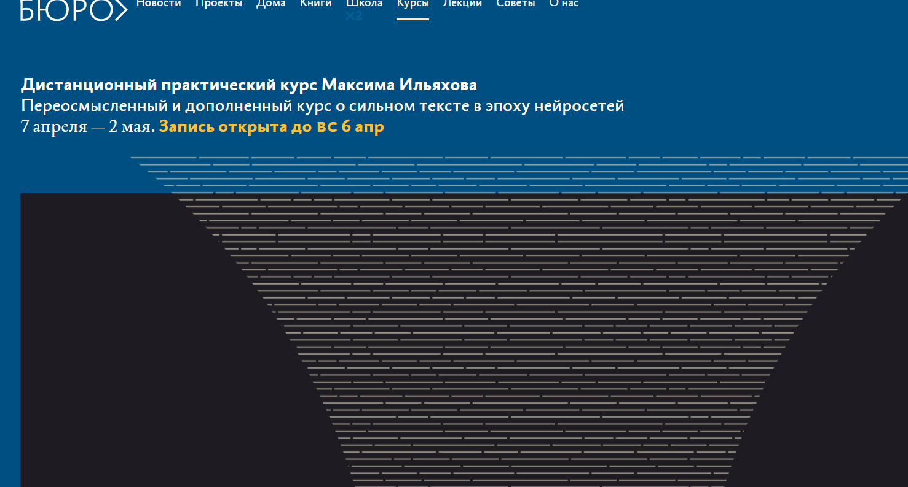
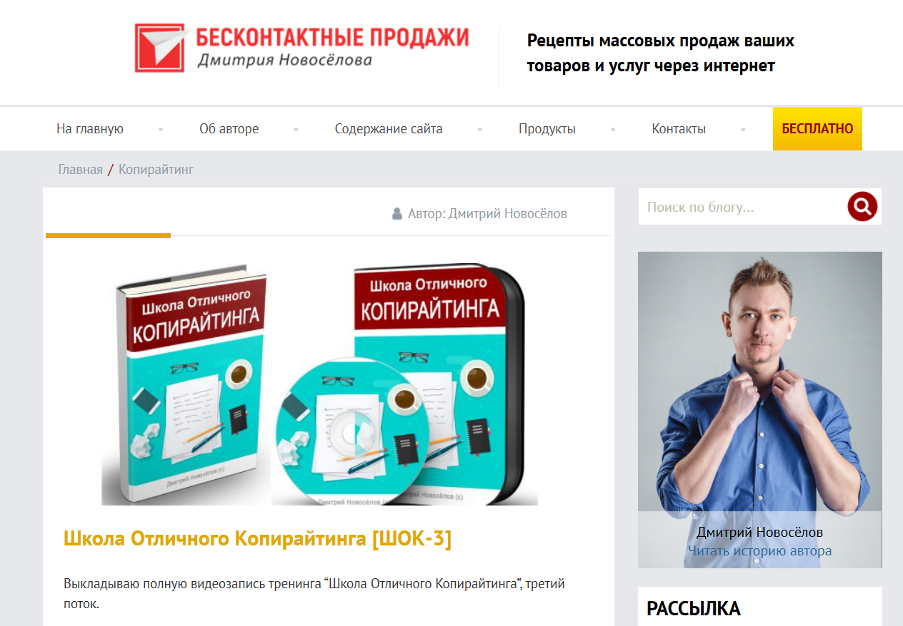
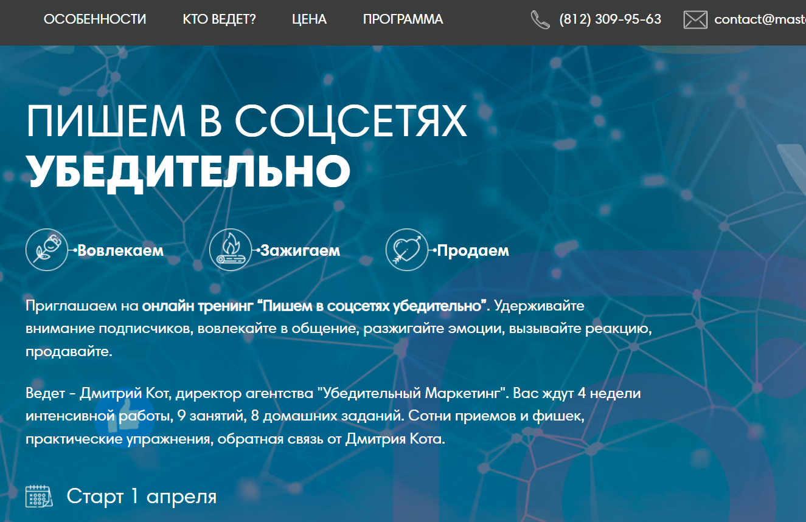
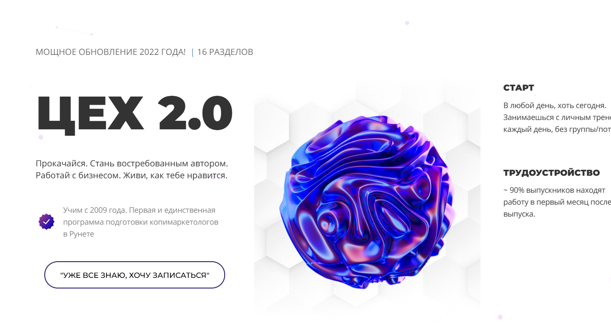

№1 Копирайтинг от А до Я — Skillbox

Ссылка: https://skillbox.ru/course/copywriter/
Стоимость обучения: 2 457 руб./мес (доступна рассрочка на 12 месяцев)
Полная стоимость: 29 484 руб.
По итогам обучения вы получите сертификат, который подтвердит ваше образование и станет конкурентным преимуществом при поиске работы.
Вы научитесь качественному написанию текстов для различных групп читателей, что позволит вам привлекать внимание и увеличивать свои доходы.
Вам станут доступны чек-листы и примеры для создания эффективных текстов.
Вы также подготовите портфолио из пяти работ.
Предусмотрены практические задания, основанные на реальных брифах.
Вы получите неограниченный доступ к учебным ресурсам.
Кому подойдет данный курс
Тем, кто только начинает
Вы познакомитесь с основами копирайтинга, научитесь писать качественные тексты, собирать информацию и структурировать свои материалы, чтобы они были интересны читателю.
Специалистам по контенту и SMM
Вы овладеете навыками создания эффективных рекламных текстов для соцсетей, email-рассылок, лендингов и других рекламных форматов, что поможет значительно расширить вашу аудиторию и укрепить отношения с клиентами.
Студентам и выпускникам гуманитарных направлений
Вы обретете практические знания в области коммерческого письма и научитесь решать бизнес-задачи.
Желающим зарабатывать на текстах
Вы узнаете о профессии копирайтера, научитесь писать качественно в различных форматах и находить интересные проекты для начала своей карьеры.
Чему вы научитесь
Создавать тексты высокого качества.
Вы сможете работать в разнообразных стилях и форматах, приводя примеры в своих текстах.
Анализировать брифы.
Вы освоите методы быстрого изучения заданий и эффективного общения с клиентами.
Создавать контент для определенной аудитории.
Вы научитесь учитывать потребности читателей и генерировать полезные материалы.
Редактировать свои тексты.
Вы избавитесь от сложных формулировок и ненужных слов, создавая уникальные и запоминающиеся тексты.
Презентовать свои работы.
Вы овладеете реакцией на правки и конструктивным общением с клиентами.
Составлять портфолио.
Вы поймете, как правильно подбирать работы для своего портфолио, обосновывать ценность услуг и представлять себя потенциальным клиентам.
Структура курса
Вас ожидают вебинары и практические занятия с анализом реальных кейсов.
8 обучающих модулей.
41 онлайн-занятие.
Основы профессии.
Разнообразные форматы текста — статьи.
Различные форматы текстов — карточки.
Форматы текстов — email-рассылки.
Другие текстовые форматы.
Как создавать эффективные тексты.
Как взаимодействовать с клиентами и организовывать рабочие процессы.
Личный брендинг.
Итоговая работа: написание текстового контента по заданию клиента.
Преподаватели
Сергей Король — контент-директор в Яндексе.
Людмила Сарычева — руководитель редакционного бюро «Гладлакс», редактор и автор книг о текстах.
Полина Накрайникова — редактор по развитию в «Горящей избе».
№2 Факультет редактуры и копирайтинга в Geekbrains

Диплом о профессиональной переподготовке — да.
Государственная образовательная лицензия — да.
Цена: от 2 907 руб. в месяц с возможностью рассрочки на 36 месяцев.
Форматы обучения:
Групповые занятия под руководством преподавателя.
Онлайн-лекции и вебинары.
Видеозаписи занятий.
Продолжительность — 12 месяцев (два занятия в неделю)
Результат — Диплом
4 работы в портфолио.
ГАРАНТИЯ — Трудоустройство после завершения курса.
Кому подойдет курс
Копирайтерам
Главная цель любого коммерческого текста — показать клиентам, как ваш продукт может решить их проблемы. Вы научитесь делать это доступно и привлекательно.
Тем, кто хочет сменить профессию
Станьте специалистом, создавая качественные информационные продукты и формируя портфолио для начала карьеры.
SMM-менеджерам и email-маркетологам
Расширьте свои карьерные горизонты, научившись работать с текстами в качестве редактора, что повысит эффективность ваших действий и конверсию.
Программа обучения
1
Подготовительный этап: определения профессии.
Создание текстов.
Работа с информацией.
Редактирование.
Введение в профессию.
2
Юридические аспекты.
Тексты для интернет-пространства.
Этика в медиа.
Основы авторского права.
Редакция и её ключевые моменты.
Риски в работе с контентом.
Защита прав редактора и копирайтера.
3
Формирование контентной стратегии.
Базовые навыки вёрстки.
Создание цифровых проектов.
Аналитика.
Тематика контент-стратегии.
Способы распространения контента.
Контентный план.
Редакционная политика.
4
Работа в команде.
Взаимодействие с заказчиками.
Фриланс.
Роли в команде и распределение задач.
Инструментарий проектной работы.
Поиск подрядчиков и управление критикой и оплатой.
Бюджет.
Эксперты
Павел Федоров — продакшен-директор КБ «Палиндром».
Создатель Telegram-канала «Паша и его прокрастинация», автор подкастов «Поредачим» и «Что-то горит». Работал над запуском спецпроектов для «Лайфхакера», трудился в «ВКонтакте», управляя контентом на Profi.ru, а также занимал редакторские позиции в «Нетологии».
Татьяна Симакова — главный редактор сайта The Village.
Основала медиа-проект «Большая деревня», публиковалась в Wonderzine, Colta.ru, OpenSpace и «Афиша Daily».
Вы научитесь писать привлекательные тексты, которые невозможно игнорировать, с учётом различных аудиторий и целей, продвигая продукты.
№3 Коммерческий редактор/копирайтер — Нетология

Ссылка: https://netology.ru/programs/kontent-menedjer-edpro#/presentation
Формат обучения: видеолекции, вебинары, тесты, онлайн-мастерклассы, финальный проект.
Содержание курса включает базовые модули и выбор специализации.
Работа редактора контента направлена на решение бизнес-задач: подбор текстовых форматов, формирование команды и создание контентной стратегии, а также оценка её результата.
Профессия коммерческого редактора охватывает редактирование, понимание задач и управление процессами.
Кому подойдет этот курс
Журналистам, копирайтерам и новичкам в редактировании
Вы погрузитесь в сегмент digital, сделаете шаг к смене специальности и начнете работать с контентом для бизнеса.
Маркетологам, PR- и SMM-специалистам
Вы изучите методы продвижения бренда через контент и взаимодействия с редакционными командами.
Тем, кто намеревается сменить профессию
Научитесь создавать тексты для различных форматов, упаковывать контент, разрабатывать стратегии и управлять процессами редактирования.
Чему вы научитесь
Создание материалов, соответствующих бизнес-задачам
Написание статей для корпоративных блогов и медиа, создание контента для постов в социальных сетях и email-рассылок.
Верстка статей и лендингов
Создание текстов в Tilda, Readymag, Setka, WordPress и формирование полноценных информационных продуктов.
Использование методов сторителлинга
Подбор иллюстраций, соблюдение принципов типографики, формирование «чистого» текста.
Оптимизация редакционных процессов
Планирование работы группы, разработка стандартов редактирования, создание контент-планов и определение KPI.
Организация дистрибуции контента
Выбор каналов для продвижения, расчет бюджета, составление медиапланов.
Работа с аналитикой
Мониторинг показателей с помощью веб-аналитики для оценки эффективности контента и маркетинговых стратегий.
Итоговое задание
Вы создадите стратегию контента или бизнес-план с концепцией специального проекта, основываясь на реальной задаче, и в случае отсутствия — вам будет предложена учебная.
Форматы обучения
Курс «Коммерческий редактор с нуля».
Для тех, кто хочет усовершенствовать свои навыки в новой профессии.
8,5 месяцев, 330 часов, 52 лекции по 1,5 часа, 27 домашних заданий с оценкой.
Содержание программы:
Работа с текстом.
Упаковка контента.
Специализация: основы контент-маркетинга. Вы научитесь взаимодействовать с соцсетями, создавать лендинги, вести корпоративные блоги и составлять email-рассылки, а также разрабатывать контент-стратегию.
Разрешение рассрочки: 3 785 руб./мес. на 18 месяцев.
Общая стоимость: 68 140 руб.
Коммерческий редактор PRO
Для профессионалов, работающих с текстами и стремящихся развить навыки редактора.
7 месяцев обучения, предполагающих 309 или 262 часа в зависимости от выбранной специализации, включают 42 либо 48 уроков, каждый из которых продолжается полтора часа, а также 18 или 12 домашних заданий с обратной связью.
Содержание курса
- Подготовка контента.
- Искусство повествования.
- Выбор специализации: основы контент-маркетинга или разработка уникальных проектов.
Изучите различные форматы контента и исследуйте их эффективность. Освойте работу с инструментами Tilda, Readymag, Setka и WordPress. Научитесь, как организовать команду и сделать свой проект источником дохода.
Предлагаем рассрочку: 3 326 рублей в месяц на протяжении 18 месяцев.
Итоговая стоимость курса: 59 880 рублей.
Учебный план
- Основной курс.
- Создание маркетингового контента.
- Редактирование и оформление материалов.
- Искусство повествования.
- Специализации по пакету «Продвинутый редактор».
- Формирование контент-стратегий.
- Создание уникальных проектов.
Коммерческий автор от TexTerra

Сайт: https://teachline.ru/courses/commercial-author/
Стоимость: 12000-26000 рублей.
Длительность обучения составляет: 14 видеолекций по 1,5 часа
По окончании курса вы получите диплом и рекомендательное письмо, что значительно упростит поиск клиентов.
Этот курс даст вам возможность:
- Быстро освоить новую профессию и начать зарабатывать удаленно из любой точки мира.
- Увеличить цену на свои услуги и перейти к уровню, когда стоимость ваших текстов соответствует средней и высокой категории рынка.
- Научиться создавать тексты для бизнеса. Если вы занимаетесь маркетингом, но у вас нет навыков написания анонсов, рекламных материалов, образов и статей – этот курс именно для вас.
Вас ожидает:
- 14 видеоуроков по 1,5 часа.
- Проверка домашних заданий и обратная связь от преподавателей.
- Возможность задавать вопросы кураторам.
- Знания и навыки для написания текстов различных форматов – от статей до лендингов и интервью.
- Основы SEO и интернет-маркетинга.
- Техники редактирования и корректуры текстов.
- Инструменты для поиска клиентов (включая те, что менее известны).
- Доступ к дополнительным материалам курса и записям лекций на протяжении года.
Содержание курса:
Введение в копирайтинг. Изучим задачи и специфику работы копирайтера в области контент-маркетинга. Определим ответственность копирайтера и возможности карьерного роста. Ознакомимся с этическими стандартами профессии.
Разнообразие текстового контента и его особенности. Что должно быть в эффективном и современном контенте? Рассмотрим основные виды контента и их создание. Тексты для одностраничников: выясним структуру текста для лендинга, его ключевые элементы и формы обратной связи. Поймем, почему текст для одностраничника важен для стратегии. Обсудим, как внедрять уникальный контент в статьи.
Нестандартные форматы: инфографика, видео, тесты, white paper. Что такое ньюсджеккинг и каким образом его применять? Как измерять вовлеченность аудитории? Что актуально для B2C и что для B2B?
Основы источниковедения. Как корректно выбрать тему, оптимизировать контент, собирать и проверять информацию?
Структура и оформление текста. Как по-разному воспринимается печатный текст и текст на вебе? Как структура текста влияет на его восприятие? Основы HTML для коммерческих копирайтеров. Как правильно оформлять публикации.
Примеры успешного и неуспешного оформления. Стилистические нюансы. Как знание стиля помогает создавать привлекательные тексты? Почему важно разбираться в стилистике, когда редактор вносит изменения? Как читатели реагируют на тексты, написанные в разных стилях? Какие стилистические приемы следует освоить?
Журналистика в коммерческом письме. Сравнительный анализ отличий между коммерческими авторами и журналистами. Какие качества необходимы хорошему журналисту? Форматы контента, используемые в журналистике.
Творческое письмо. Упражнения для развития литературных навыков с применением различных техник.
Утренние страницы. Методика от противного. Фрирайтинг: разнообразные подходы к созданию контента. Как создавать тексты для социальных медиа: посты и рекламные объявления. Основные концепции контента в соцсетях.
Как формировать рубрикатор и контент-план. Обычная структура поста. Форматы контента для различных социальных сетей, таких как Instagram, ВКонтакте и Facebook.
Редакция и корректура. Принципы самоконтроля: как проверять свой текст, не теряя его первоначального духа? Как вносить изменения, не испортив авторский стиль?
Основные правила редактирования. Корректура. Важные факторы, которые следует учитывать. Как проводить самопроверку, на какие источники опираться в вопросах русского языка? Что делать при обнаружении новых слов, которые еще не зарегистрированы в официальных словарях?
Основы SEO. Как привлечь трафик через поисковые системы? Почему так важна текстовая оптимизация? Где искать ключевые слова? Как правильно их встраивать в текст? Как избежать переоптимизации? Основные принципы SEO. Где искать клиентов и как продвигать свои услуги? Где можно найти выгодные проекты?
Как эффективно представить себя и строить личный бренд? Как сформировать портфолио и составить коммерческое предложение. Практическое занятие. Обсуждение ошибок. Ответы на вопросы, возникающие в процессе обучения, и ликвидация пробелов в знаниях. Практические советы.
Копирайтер для экспертов и онлайн-школ — Ольга Придейная

Сайт: https://prideina-course.ru/
Цены:
Самостоятельное обучение – 22500 р.
Базовый курс – 29500 р.
Расширенный пакет – 45500 р.
Кому станет полезен этот курс
Курс подойдет:
- тем, кто стремится к карьере копирайтера с возможностью работать удаленно;
- любителям писательства, желающим превратить свое хобби в профессию;
- людям, стремящимся находить работу даже в нестабильной экономической ситуации;
- тем, кто создает контент для Instagram и хочет поднять свои навыки на новый уровень;
- желающим не только теоретические знания, но и практическую подготовку;
- тем, кто хочет овладеть искусством написания высокооплачиваемых текстов.
Курс подходит для
Начинающих копирайтеров. Вы освоите методы написания текстов для лендингов, email-рассылок, лид-магнитов и Instagram-постов, включая рекламные и экспертные материалы. Ваше портфолио будет готово, и вы сможете найти работу сразу же после окончания курса.
Профессионалов в копирайтинге. Вы повысите качество вашего контента, углубите свои знания о marketing и научитесь правильно позиционировать свои услуги для увеличения их стоимости. Также будете ознакомлены с принципами работы инфобизнеса.
Специалистов SMM, контент-менеджеров и администраторов Instagram. Вы наберете навыки создания притягательного контента, который заинтересует читателей с первых строк, а также научитесь привлекать новых подписчиков и совершать продажи через текст. Это поможет вам расширить свои возможности и увеличить доход.
Формат обучения
Интенсивный месяц практики с текстами.
Обучение организовано в онлайн-формате на платформе Getcourse. Каждую неделю вы будете участвовать в живых вебинарах, на которых получите новую информацию. Всего предусмотрено 4 вебинара, во время которых можно задать вопросы и обсудить часто встречающиеся ошибки. Если вы не сможете присутствовать на вебинаре, записи будут доступны для просмотра.
На каждом этапе курса вас ждут видеоуроки и дополнительные материалы в формате электронных документов: чек-листы, инструкции и прочие ресурсы.
Дважды в неделю вам необходимо будет выполнять домашние задания в удобное для вас время.
Вы получите детальную индивидуальную обратную связь на нашей платформе в аудиоформате. Ваша работа не останется без внимания.
Вы также будете иметь доступ к групповой чат, где сможете общаться, получать поддержку и задавать актуальные вопросы. В чате предусмотрено взаимодействие как с автором курса, так и с другими участниками.
На пятой неделе вам предоставится возможность пройти стажировку на реальных проектах (для учащихся с тарифом «Базовый» и «Максимальный»), что позволит вам общаться с клиентами и найти работу ещё во время учебы.
После завершения курса вам откроется доступ к чату с вакансиями в Telegram, что упростит процесс поиска работы.
Программа курса
1-я неделя
1-й блок: Искусство создания убедительных коммерческих текстов. Эффективные методы продаж через текст.
Как написать ясный и убедительный текст.
Структура текста.
Формулы написания продающего контента.
Как захватить внимание читателя с помощью впечатляющего начала.
Психология продаж. Продающие блоки в тексте. Как подчеркнуть достоинства товара/услуги.
Призыв к действию и способы его составления.
Как достичь успеха в продажах без неловкости.
2-я неделя
2-й блок: Оформление текста для лендинга.
Создание страницы захвата для вебинара эксперта: структура и ключевые компоненты.
Как составить привлекательные заголовки и подзаголовки.
Использование триггеров.
Элементы текста для лендинга – одна из самых популярных и высокооплачиваемых услуг.
3-й блок: Написание текстов для email-рассылок.
Ключевые принципы успешной email-рассылки.
Как эффективно формировать email-рассылки для экспертов, чтобы каждое письмо было прочитано.
Разнообразие типов рассылок.
Построение серии писем для вебинаров.
Что включать в письма.
Роль копирайтера в создании рассылок.
Как оценить успешность email-рассылки и улучшить ее результативность.
Способы предотвращения попадания в спам.
3-я неделя
4-й блок: Создание экспертного контента в Instagram.
Как установить близкие отношения с подписчиками.
Основы написания экспертных текстов.
Как наладить сотрудничество с экспертом и адаптироваться к его стилю.
Контентная воронка и стратегии привлечения клиентов через посты и сторисы.
Планирование контента и стратегии продвижения по воронке.
5-й блок: Как привлечь максимальное количество участников на вебинар через Instagram.
Эффективные способы анонсирования вебинаров и приглашения участников с помощью контента в блоге эксперта.
Традиционные и нестандартные способы подачи информации.
[/spoiler>
Сторителлинг: Искусство составления историй
Методы привлечения внимания аудитории.
Неделя 4
Блок 6: Лид-магниты
Что такое лид-магниты?
Типы лид-магнитов и способы заработка копирайтера на них.
Основная функция лид-магнитов.
Ключевые правила их разработки.
Дополнительные занятия:
- Урок от психолога: «Как справиться со страхами новичка-копирайтера».
- Урок: «Создание текста для лендинга с платным продуктом».
- Урок: «Управление проектами в области копирайтинга. Как правильно организовать задачи и проекты».
- Урок: «Управление задачами и таск-менеджмент».
- Урок: «Роль контента в продвижении образовательных продуктов».
- Урок: «Проектирование прототипа лендинга».
- Урок: «Яндекс.Дзен: как распорядиться его возможностями».
- Урок: «Создание текста для таргетированной рекламы».
Прохождение стажировки (для тарифов «Базовый» и «Максимум»)
Неделя 5
Стажировка (для тарифов «Базовый» и «Максимум»)
О преподавателе курса
Ольга Придеина
- Копирайтер и филолог, занимающаяся разработкой курсов по копирайтингу.
- Стаж в копирайтинге составляет более 5 лет.
- Автор свыше 4500 коммерческих текстов на заказ.
- Организатор курсов, выпустившая более 600 студентов, среди которых есть специалисты, работающие с известными блогерами.
Курс копирайтинга

Хотя основы письма формируются еще в школьные годы, не каждый умеет успешно излагать свои мысли, взаимодействовать с читателями и достигать поставленных профессиональных целей через текст.
Копирайтинг — важный навык для современного специалиста, который может стать как дополнительным, так и основным источником дохода.
Школа юного копирайтера предлагает курс, который поможет начать писать коммерческие тексты. Программа охватывает основы копирайтинга, нюансы написания для различных форматов и целей, технические требования, правила редактирования, методы, а также практические задания, способствующие развитию креативности и улучшению качества контента.
Курс состоит из 8 онлайн-занятий с практическими заданиями. Работая над текстами, вы получите необходимые навыки, получите отзывы от преподавателя и возможность анализировать работы своих коллег.
Занятия проходят в онлайн-формате по будням с 10:00 до 12:00 дважды в неделю.
Интенсивный копирайтинг-курс

Цена: 8 888 РУБЛЕЙ
Длительность: 4 недели
7 обязательных уроков по 1,5-2,5 часа: 6 записанных и 1 онлайн-трансляция.
6 домашних заданий с индивидуальным анализом каждой работы и отслеживанием прогресса.
Структура курса
- Основы качественного текста: создайте свой первый текст, следуя правилам копирайтинга.
- Образцовый текст: научитесь составлять полезные материалы, вызывающие положительные отклики и сохранения.
- Анализ ошибок: освоение выявления и исправления ошибок для повышения ясности и выразительности текста.
- Методы написания: ознакомьтесь с простыми методами, чтобы не теряться в процессе создания текста.
- Художественные приемы: наполняйте текст эмоциями и создавайте яркие образы в сознании читателя.
- Нативная реклама и интервью: изучите, как представить продукт так, чтобы заинтересовать рекламодателей.
Курс по техническому копирайтингу

Время обучения: 72 часа.
Цена для индивидуальных лиц: 19800 руб.
Цена для юридических лиц: 24900 руб.
Цели обучения
Повышение профессиональных навыков в области создания технической документации и анализа в сфере IT. Обучение проходит в онлайн-формате, у вас есть возможность выбрать дату начала и время занятий.
Что вы узнаете в течение курса и что ожидает вас после его завершения?
Если вы находитесь на начальной стадии своей карьеры, мы поддержим вас в освоении профессии технического писателя и поможем подготовить стартовые материалы для вашего портфолио.
Вы испытаете ощущение радости от продвижения в профессиональной сфере и сможете ознакомиться с множеством новых знаний.
Полученные знания и сертификат от нашей учебной организации предоставят вам уверенность для начала вашей карьерной стратегии. Если у вас уже есть навыки, но вы хотите закрепить или уточнить определенные аспекты, процесс обучения станет отличной возможностью для их совершенствования.
Вы получите больше удовольствия от своей профессиональной деятельности, что поможет вам принимать более сложные вызовы.
Опытные технические писатели, открытые к получения критики, смогут выявить недостатки в себе и работать над ними в ходе обучения.
Кроме новых знаний, вы также получите возможности для продвижения по карьерной лестнице, так как стремление к развитию всегда является преимуществом!
Обучение: Программа курса
- Погружение в профессию:
- Способы становления техническим писателем.
- Юридические аспекты специальности.
- Классификация документов и их целевая аудитория.
- Требования к оформлению документации и статей.
- Особенности стиля технической документации.
- Основы создания технического контента.
- Методика оформления документации для программного обеспечения и устройств.
- Создание научных и аналитических статей.
- Разработка видеоматериалов и слайд-презентаций.
- Описание технических схем и кода.
- Составление технических заданий и текстов для маркетинга.
- Работа с переводами и создание контента для сайтов.
- Знакомство с необходимыми программными средствами и особенностями работы редактора.
- Процесс создания документации и действующие стандарты.
- Возможные направления для самостоятельного изучения.
- Проверка документации на соответствие стандартам.
- Итоговое задание: создание документа, обзорной статьи или презентации.
Последний курс по копирайтингу
Чем наполнен курс
- Вы постоянно будете заниматься написанием. Обучение включает не только информационные вебинары.
- 49 видеоуроков: доступ к записям в любое время и возможность повторного просмотра.
- Персональный кабинет с доступом с любых устройств, удобная организация учебного процесса.
- Каждый урок включает задания для закрепления изученного материала.
- Ответы на ваши вопросы в течение 24 часов, возможность получить индивидуальный отзыв по запросу.
- Практические примеры — обходите лишнюю теорию, только актуальная информация.
- Неограниченный доступ к курсу — не торопитесь, всегда успеете.
- Формирование вашего портфолио с рекламными текстами для выбранного товара.
- Онлайн-вебинары, где разбираются ваши материалы и обсуждаются варианты их улучшения.
- Возможность заниматься самостоятельно с обратной связью по написанным текстам.
- Поддержка групповых обучений и обсуждений текстов.
Присоединиться к группе можно в любой момент, количество завершивших участникам не имеет значения. Каждый индивидуально выбирает свой темп. Важной частью нашего формата являются еженедельные собрания по воскресеньям, где предоставляются отзывы на ваши работы. Если вы пропустили занятие, не переживайте! Вы всегда сможете вернуться и посмотреть записи.
ИЛИ ИНДИВИДУАЛЬНЫЕ ЗАНЯТИЯ СО МНОЙ ПО SKYPE
Здесь мы практикуем индивидуальный подход: вы получите анализ каждого задания на консультации по Skype и освоите дополнительные методы в зависимости от ваших нужд. Этот формат подходит не всем, так как предполагает больше временных и финансовых затрат. Если вы ограничены по времени, легче заниматься в группе.
Авторский Курс — Надежда Сокирская

Сайт: https://sokirskaya.ru/
Длительность: 6 недель обучения
ЦЕНА КУРСА:
Базовый — 35000р
Больше практики — 46000р
Максимум практики — 85000р
Зачем нужен курс?
Этот курс будет полезен тем, кто хочет научиться писать заказы, независимо от предыдущего опыта. Если вы умеете писать и настроены работать, за 6 недель вы получите базу по профессии, опыт работы с реальными клиентами и создадите свое портфолио.
Для тех, кто уже пишет тексты и желает увеличить свои доходы, программа поможет выявить свои сильные и слабые стороны, провести анализ ошибок, освоить новые концепции и укрепить уверенность. Вы научитесь создавать content, который увеличивает продажи и сделает вас привлекательным автором для блогеров, продюсеров и предпринимателей.
Формат обучения
Курс состоит из шести недель интенсивных занятий с выходом уроков по будним дням и выполнением 12 домашних заданий. Участники делятся на группы (по 10-12 человек) под руководством куратора. Все задания оцениваются куратором, предоставляется подробная обратная связь и работа над реальными проектами с отзывами от клиентов. Вы подготовите актуальное портфолио на платформе Tilda и получите доступ к поддерживающему Telegram-каналу с коучем, а также возможность накопления баллов для получения призов.
Структура курса
Вводный раздел. Доступ сразу после оплаты.
Поиск работы. Доступ на второй неделе курса.
Основные навыки копирайтера.
Тексты, способствующие повышению продаж. Практика с реальными клиентами.
Контент для социальных сетей. Работа с клиентами.
Формирование портфолио. Итоги пройденных тем.
Специальный модуль-тренажер для практики коммуникации с клиентами.
О преподавателе
Надя Сокирская
журналист, редактор и блогер. Окончила Литературный институт, известный высоким качеством своей подготовки. Более 10 лет работала в СМИ: начала с должности редактора на радиостанциях «Русская служба новостей» и «Говорит Москва», затем стала выпускающим редактором сайта «Комсомольская правда». В период с 2014 по 2017 годы она занимала должность главного редактора Леди.Mail.Ru. Читала лекции по интернет-журналистике в МГУ, имеет опыт работы с стажерами и сотрудничества с авторами. Создала блог, который быстро набрал более 100 тысяч подписчиков, также преподавала в школе телевидения «Останкино ТВ».
КУРАТОРЫ
Наталья Семенова
Шеф-редактор PR-службы Правительства Москвы. Ранее работала редактором на aif.ru и шеф-редактором телеканала «Звезда».
Алена Костомарова
Шеф-редактор и заместитель руководителя отдела спецпроектов МИА «Россия сегодня». Она помогает компаниям в продвижении их услуг и решении бизнес-задач. Имеет 14-летний опыт работы с текстами и сотрудничала с изданиями, такими как Geo и РБК.
Конструктор продающего текста от Школы копирайтинга Дениса Каплунова
Сайт: https://deniskaplunov.com/kpt/
Стоимость:
Стандарт: 18 525 руб
Премиум: 37 275 руб
В течение полутора месяцев, изучив более 70 примеров, вы осознаете 100 наиболее эффективных приемов копирайтинга, что позволит повысить конверсию ваших текстов как минимум в три раза.
Кому полезен этот курс?
Предпринимателям и бизнесменам
Вы сможете создавать текстовый контент, который привлечет в 3–5 раз больше клиентов и значительно увеличит вашу прибыль.
Копирайтерам (как независимым, так и штатным)
Вы развите свои навыки, освоите новые позиции и заметно увеличите свою продуктивность, что приведет к повышению дохода.
Консультантам и экспертам
Вы обретете умение писать тексты, способствующие продвижению ваших услуг, благодаря чему увеличите средний чек и доходы.
Маркетологам и менеджерам по продажам
Вы обретете важные навыки, которые принесут вам конкурентные преимущества и значительно увеличат ваши результаты.
Что вас ждет?
Полтора месяца обучения
100+ методик копирайтинга
Проверка домашних заданий
70+ примеров текстов
Гибкий график обучения
18 видеолекций
Конспекты всех занятий
Дополнительные материалы
СОДЕРЖАНИЕ КУРСА
«Заголовки»
#1
Ключевой вопрос, который стоит перед заголовками.
Три основные функции заголовка.
Как привлечь внимание с помощью подзаголовка.
Примеры успешных подзаголовков в продажах.
20 формул для написания эффективных заголовков.
Когда подзаголовок уместен и его основные функции.
20 примеров сочетания «Заголовок + Подзаголовок».
В конце: вы научитесь создавать привлекательные заголовки, которые привлекают внимание и вовлекают в текст.
«Вводная часть»
#2
Почему 80% текстов теряют читателя.
Формула привлечения внимания читателя.
5 задач вводной части текста.
Значение микро-заголовков.
7 техник создания мини-заголовков и 34 примера.
10 основных подходов написания вводной части рекламного текста.
10 креативных способов начать текст.
В итоге: вы поймете, как начать продающий текст, чтобы вызвать доверие у читателя и вызвать интерес к продолжению.
«Описание и представление»
#3
Эффективность принципа «Тройной выгоды».
Способы обновления старого товара.
Формула представления товара в два этапа.
Уникальное торговое предложение в 10-20 словах.
14 способов представления продукта или услуги
Дополнительный теглайн для усиления сообщения + 7 оригинальных идей.
В результате: вы создадите уникальное торговое предложение и освоите методы выделения ваших сильных сторон, чтобы стать более заметными на рынке.
Формирование успешных деловых кейсов и вдохновляющих историй
Как статистические данные могут подтвердить ваши аргументы.
Инструменты, которые подтверждают вашу профессиональную компетентность.
16 подходов к аргументации с конкретными примерами.
Вывод: вы научитесь выбирать убедительные доказательства, эффективно развеивать сомнения и опровергать возражения, показывая эффективность вашего предложения.
«Предложение цены»
#5
Концепция «ценовой продажи».
Способы составления текста, когда нет фиксированной цены.
Стратегии применения сопоставимых цен.
5 техник работы с расценками.
4 типа гарантий и 9 примеров их использования.
Методы обоснования цен.
Вывод: вы станете экспертом в формировании ценовых предложений, чтобы клиент сам увидел преимущества работы с вами.
«Заключительная часть текста»
#6
Способы завершения продающего текста без снижения конверсии.
Формула, побуждающая к действию.
Как специальные предложения влияют на конечные результаты.
15 удачных примеров завершений для рекламных текстов.
В итоге: вы научитесь заканчивать ваши тексты так, чтобы вызвать стремление читателя начать сотрудничество немедленно.
Как проходит обучение?
Начало
Вы получите доступ к образовательной платформе с материалами курса.
Уроки
Постепенно изучаете видеоуроки каждого блока (теория и практические примеры).
Практика
Выполняете задания и отправляете их на оценку.
Оценка
Преподаватель анализирует вашу работу и дает рекомендации.
Консультации
Доступ к двум консультациям от Дениса Каплунова (в пакете «Премиум»).
Автор курса
Денис Каплунов
Известный эксперт в сфере копирайтинга, контента и маркетинга.
Завоевал отличную репутацию благодаря серьёзному подходу к тексту.
Имеет 12 лет опыта в создании коммерческого контента.
Успешно завершил более 4000 проектов для свыше 700 клиентов.
Сотрудничал с более чем 100 компаниями из различных отраслей.
Учредитель агентства «Студия Дениса Каплунова».
Что вы получите после окончания курса
- Бонус 1 — Мини-курс «Копирайтинг XXI века»
- Бонус 2 — Набор из 10 чек-листов
- Бонус 3 — Мастер-класс «SOLD OUT»
- Бонус 4 — Мастер-класс «Клиенты из соцсетей»
- Бонус 5 — Мастер-класс «15 упражнений по копирайтингу»
- Бонус 6 — Мастер-класс «Коммерческое предложение на одну страницу»
- Бонус 7 — Мастер-класс «Переписка с клиентами»
«Базовый курс Главреда» от Максима Ильяхова

За последние шесть лет курс не раз обновлялся: появились новые темы, а старые получили новые идеи. В конце 2019 года кооперация с Стасом Миляевым привела к созданию видео-версии, где собраны ключевые знания о написании эффектного текста в 13 недлинных видео. Старая информация была обновлёна и обогащена новыми элементами:
- Применение Главреда
- Разбор информационного стиля
- Опасные слова
- Вводные конструкции
- Оценочные выражения и усилители
- Штампы
- Сложные предложения
- Синтаксис
- Канцеляризмы
- Кинематографические приемы
- Уточнения
- Однородные члены
- Ясность текста
- Эффективная коммуникация
- Практическая ценность текста
- Контекст
- Подходы к следующим шагам
Углубленный 2-месячный курс ИНТЕРНЕТ-ПРОФЕССИЯ КОПИРАЙТЕР 2.0 от Натальи Реген
Сайт: https://infovoronka.ru/ipk2-0-price-special Цена: Пакет «Базовый» — 13990р, Пакет «Стандарт» — 20990р, Пакет «Премиум» — 40990р
Как проходит обучение?
Модуль 0
Этап подготовки
На этом начальном этапе мы установим контакт. Вы получите структуру курса и ознакомитесь с методами обучения. Мы сосредоточимся на основах маркетинга, необходимых любому копирайтеру. Внимательно обсудим профессию копирайтера и формулу «Т», применимую на практике. Вы также узнаете, как найти своего первого клиента для стажировки, что позволит вам получить ценный опыт работы с реальным заказчиком.
Модуль 1
Статьи и тексты для сайтов
Каковы форматы и виды статей, которые нужно уметь создавать?
Шаблоны различных типов статей.
Практические задания по созданию ваших первых статей для портфолио.
Принципы написания текстов для наполнения сайта: главной страницы, страниц категорий, страниц услуг, страницы о авторе и компании и многих других.
Как создать структуру любого текста: практическое занятие.
Модуль 2
Продающие тексты
Вы узнаете о типах и форматах продающих текстов.
Рабочая тетрадь с рекомендациями по структуре текстов, чтобы сэкономить время.
Формулы самых популярных продающих текстов.
Практическое задание: написание продающего текста для вашего портфолио.
Модуль 3
Социальные медиа
Как организовать сторителлинг?
Создание контент-плана для клиента.
Как написать тексты для социальных сетей?
Публикации контента.
Методы подготовки аудитории к покупкам.
Рекламные и продающие посты.
Модуль 4
Рассылки, чат-боты и автоматизированные воронки
Как выстроить стратегию рассылок (с примерами и шаблонами)?
Алгоритм написания пяти видов писем.
Создание автоворонок: теоретическая и практическая части.
Как разработать чат-бота: услуги от 15 000 рублей.
Модуль 5
Упаковка услуг и самопрезентация
Как составить бриф, который описывает порядок работы с клиентом?
Как правильно оформить портфолио.
Как разрабатывать кейсы.
Как создать профессиональную страницу, группу или сайт для продвижения личного бренда.
Модуль 6
Поиск клиентов и получение заказов
Как находить платежеспособных клиентов?
Три наиболее эффективных метода привлечения долгосрочных клиентов.
Как уверенно и профессионально вести переговоры?
Лучшие платформы для поиска клиентов.
Готовые шаблоны для обращения к заказчикам – что написать, чтобы выбрать именно вас.
Модуль 7
Определение специализации для повышения заработка
Как выбрать нужную специализацию?
Основные направления в копирайтинге.
Специализации на выбор: автоворонки, услуги, контент-маркетинг, интернет-магазины, онлайн-курсы.
Модуль 8
Комплексные предложения для клиентов
Как оформлять повторные предложения клиентам для увеличения дохода от одного проекта?
Как правильно предложить клиенту комплексную услугу: поэтапная инструкция.
Система получения заказов на сумму свыше 10 000 рублей за один проект.
Финал
Аттестация для получения сертификата.
План профессионального развития: пути дальнейшего роста.
Личная система увеличения доходов.
Формат обучения
Занятия на платформе.
Постоянные обновления.
Вебинары с ответами на вопросы.
Поддержка наставника.
Удалённая профессия Копирайтер — Артур Грант и Вероника Головченко / Profi Internet
Сайт: https://copywriting.artur-grant.ru/ Длительность: 2 недели Формат: онлайн Цена: бесплатно
Что вы получите?
Вы сможете пройти двухнедельный курс по копирайтингу абсолютно бесплатно. Начнете зарабатывать удаленно, создавая тексты по обоснованным требованиям.
Авторы курса
Артур Грант – соавтор курса и основатель школы Profi-Internet. Копирайтер с семилетним опытом, который за год своей карьеры перешел от низкооплачиваемых заказов – от 2 до 3 долларов за текст до ощутимых 200-400 долларов. Тексты Артура принесли более 28 миллионов рублей дохода за последние три года.
Вероника Головченко – «играющий» коуч с более чем семилетним опытом в копирайтинге. Она обучила свыше 1000 человек как на курсах, так и в индивидуальном обучении.
Специалист по копирайтингу
Сайт: https://copy2.0.profiinet.ru/ 3-месячный онлайн-курс. По окончании обучения вы получите сертификат. Цена: пакет «СТАНДАРТ» — 9 900 руб/мес, пакет «VIP» — 15 900 руб/мес
Что ожидает вас по завершении курса?
- статус сертифицированного специалиста
- упакованность как эксперт с полноценным портфолио и личным сайтом
- знание всех аспектов работы и готовность выполнять любые сложные задачи (включая продающие тексты) от 5000 рублей
- способность находить высокооплачиваемых клиентов и наладить «сарафанное радио», чтобы клиенты приходили к вам сами
- уверенность в себе (страхи и сомнения останутся в прошлом)
- достижения в своих целях (финансовых, свободных, переход на любимую работу)
Учебная программа курса
Модуль 01
4 недели
Искусство написания статей
- Ключевые инструменты для копирайтеров
- Отличия LSI и SEO-копирайтинга
- Уникальные аспекты создания SEO-текстов для страниц интернет-магазина
- Правила форматирования текста
- Основные термины: сниппет, хлебные крошки, метатеги
- Дизайн текста
- Создание контента для социальных сетей
- Методика мышления для удобного выполнения задач
Модуль 02
1 неделя
Поиск первых заказчиков на платформах
- Выбор оптимальных платформ для копирайтеров
- Как создать профиль, чтобы привлечь внимание клиентов
- Как грамотно составлять отклики и начать зарабатывать
Модуль 03
4 недели
Формирование впечатляющего портфолио
- Создание привлекательного портфолио с нуля
- Определение стоимости вашей работы
- Выявление вашего уникального торгового предложения (УТП)
- Поиск первых клиентов за пределами платформ: где искать и как взаимодействовать
Модуль 04
4 недели
Искусство создания продающих текстов
- Брифинг
- Анализ целевой аудитории, конкуренции и продукта
- Элементарные формулы успешного копирайтинга
- Пошаговое руководство по написанию продающих материалов
- Сторителлинг
- Создание лэндингов
- Рассылки по электронной почте
Модуль 05
1 неделя
Мастер-класс по написанию комментариев, которые способствуют росту продаж
Индивидуальный подход к работе с конкретными текстами.
..
Нахождение высокооплачиваемых клиентов
- Создание успешных кейсов
- 11 стратегий поисков клиентов от Артура Гранта
- Активные и пассивные методы привлечения клиентов
- Поиск клиентов как в сети, так и вне её
- Налаживание стратегического партнерства
Модуль 06
Неделя 1
Профессиональная упаковка ваших услуг
- Определение вашей области экспертизы
- Выбор специализации
- Создание уникального названия (нейминга)
- Разработка личного сайта
Знакомство с авторами тренинга
Артур Грант
- Соавтор тренинга, маркетолог и копирайтер, основатель школы Profi-Internet
- На первом этапе работы заработал от $2-$3 за текст, вырос до $200-$400
- За последние пять лет его работа принесла более 140 миллионов рублей
Вероника Головченко
- Соавтор курса и опытный тренер с более чем 8-летним стажем в копирайтинге
- Обучила более 1200 студентов, множество из которых стали успешными копирайтерами
- Её тексты принесли свыше 7 миллионов рублей
Кому подойдет данный курс?
Новичкам:
Овладейте одним из самых прибыльных навыков 2019-2020 годов. Работайте из любой точки мира, имея гибкий график и стабильный доход.
Начинающим копирайтерам:
Станьте настоящими профессионалами, преодолейте финансовые трудности и создайте постоянный поток клиентов.
Специалистам SMM, SEO, дизайнерам и маркетологам:
Расширьте свои услуги, предлагая клиентам комплексные решения, что повысит их стоимость.
Предпринимателям:
Сэкономьте деньги, отказываясь от дорогих услуг, выбирая качественных исполнителей.
Школа копирайтинга — Мария Солодар

Сайт: https://solodar.com/copywriting-school/ Обучение займет два месяца. По окончании курса вы получите сертификат. СТОИМОСТЬ — 59 900 РУБ.
Кому подходит данный курс?
Тем, кто ищет работу:
Готовы зарабатывать свыше 100 000 рублей, трудясь в любом уголке планеты, стремясь к финансовой независимости.
Бизнесменам:
Желающим запустить новое высокодоходное направление в бизнесе.
Маркетологам:
Кто хочет расширить спектр своих услуг и благодаря текстам воздействовать на поведение клиентов.
Новичкам:
Которые не имели опыта написания текстов, но желают зарабатывать этим.
Чему вы научитесь на курсе?
Вы научитесь создавать эффективные тексты: письма, лендинги, маркетинговые материалы и презентации для продаж. У вас будет возможность писать посты для социальных сетей, способствующие развитию вашего блога и росту продаж. Вы освоите написание текста, который будет мотивировать клиента сразу принять решение о покупке.
Вы изучите, как увеличить доходность проекта при помощи качественного контента. Вы также узнаете, как использовать психологические приемы для убеждения даже самых сомневающихся клиентов. В ходе курса вы поймёте, как выстраивать долгосрочные отношения с клиентами и стабильно зарабатывать более 100 000 рублей в месяц.
Структура курса
МОДУЛЬ №1
Введение: знакомство с профессией и организационные моменты
- Договор-оферта
- Кто такой копирайтер? Что нужно знать о профессии и как к ней подготовиться
- Работа с личным кабинетом и подача домашних заданий
- Работа с брифом — начальный этап создания любого продающего текста
Дополнительные материалы:
- Шаблон брифа для копирайтера
Результаты модуля:
- Вы освоили ключевые концепции копирайтинга
- Выбрали проект для практики
- Научились использовать обучающую платформу
- Освоили работу с брифом
МОДУЛЬ №2
Психологические аспекты копирайтинга
- Основные понятия для создания качественного контента
- Как влиять на действия читателя: 33 триггера, полезных для копирайтера
- Сторителлинг как ключевая методология для написания убедительных историй
Дополнительные материалы:
- Психология влияния в продажах и бизнесе
- 30 умственных триггеров с примерами текстов
- Руководство по созданию портрета целевой аудитории
- Инструкция по созданию аватара
- Примеры проблем, которые могут возникнуть у аватара
Результаты модуля:
- Вы ознакомились с основной тематикой копирайтинга
- Научились эффективно использовать триггеры
- Создали портрет целевой аудитории и аватара
- Написали продающую историю для вашего проекта
МОДУЛЬ №3
Формулирование уникального предложения и создание убедительного оффера
- Разработка уникального предложения и результативного оффера
- Создание рекламных заголовков для привлечения внимания
Дополнительные материалы:
- Уникальное торговое предложение и заявления о ценностях
- Примеры офферов
- Специальная формула предложения
- Примеры офферов с использованием специальной техники предложения
Результаты модуля:
- Создадите декларацию ценностей для вашего проекта
- Сформулируете эффективный оффер по специальной формуле
- Разработаете рекламные заголовки
МОДУЛЬ №4
Проектирование лэндингов и создание коммерческих предложений
- Методы разработки лэндингов: создайте целевые и продающие страницы с высокой конверсией
- Исследование коммерческих предложений и маркетинг-китов
Дополнительные материалы:
- Анализ платформы Mottor
- Пример разработки лэндинга на Tilda
- Ключевые элементы лэндинга: предложение, описание, призыв к действию
- Инструкция по созданию лэндинга
- Шаблон для разработки подписной страницы
- Пример прототипа для продающей страницы в Google Docs
- Инструкция по работе с Google Docs
- Коммерческое предложение и маркетинг-кит
- Схема «21 вопрос для упаковки» от Лебедева
- 117 вопросов для упаковки
Результаты модуля:
- Создадите проектировки страниц с нуля в конструкторе
- Подготовите коммерческое предложение для своего проекта
- Научитесь формировать коммерческую презентацию
- Представите свой маркетинг-кит в качестве копирайтера
МОДУЛЬ №5
Основы email-маркетинга и написание писем
- Основные принципы email-маркетинга для организации эффективной рассылки
- E-mail как универсальный инструмент для продвижения
- Правила написания продающих писем
- Создание привлекательного и коммерческого контента для социальных медиа
- Технические аспекты настройки автоматической рассылки через сервис GetResponse
Дополнительные материалы:
- Мастер-класс «Цепочка касаний»
- Инструкция по составлению писем для email-стратегий
- Инструкция по созданию воронок продаж
- Примеры стратегий email-маркетинга
- Видеоуроки по работе с программой Xmind
- Чек-лист по написанию и оформлению email-писем
- Чек-лист по созданию серии писем и их оптимизации
- Примеры email-писем
Итоги модуля:
- Вы научитесь составлять письма с высоким коэффициентом открываемости
- Разработаете стратегический план email-маркетинга для вашего бизнеса
- Создадите серию сообщений, в том числе и рекламные
МОДУЛЬ №6
Копирайтинг для соцсетей и мессенджеров
- Создание контента для Instagram: описание профиля, посты и рекламные сообщения
- Оформление и привлечение аудитории на Facebook
- Разработка интересного и коммерческого контента для социальных платформ
- Копирайтинг для мессенджеров
БОНУС: Психология продаж в соцсетях
Дополнительные ресурсы:
- Руководство «Основы написания постов»
- Примеры оформления профиля
- Плюсы и минусы использования Facebook
- Примеры привлекательных и интересных постов
- 5 типичных ошибок при создании постов
- Искусство сторителлинга
- Структура успешной истории для продаж
- Пошаговая инструкция по написанию рассказов
- Примеры эффективных историй
- 7 рекомендаций по рассылкам в мессенджерах
Результаты модуля:
- Вы сможете правильно настроить профиль вашего проекта в Instagram и Facebook
- Научитесь анализировать успешные страницы в социальных сетях и поймете причины их успеха
- Создадите серию вовлекающих постов
- Изучите разные форматы контента для мессенджеров
- Научитесь писать сообщения, которые будут актуальны в мессенджерах
МОДУЛЬ №7
Копирайтинг для видео
- Создание текстов для рекламных видео
- Разработка сценария для вебинаров «Запуск по Волкеру»
Дополнительные ресурсы:
- Пример видео-сценария
- Образец рекламного видео курса по эротическому танцу
- Скрипт «Одноразового предложения» (OTO)
- Скрипт для рекламного видеоролика
- Пример OTO
- Как подготовить презентацию для успешного вебинара или выступления
- Шаблон презентации для продажи в Google Презентациях
Итоги модуля:
- Создадите сценарий рекламного видео для вашего продукта
- Узнаете о подходах к успешным запускам и напишите сценарии для видео вашего товара
- Сформируете структуру презентации для вашего проекта
МОДУЛЬ №8
Итоговый проект
Получите сертификат
Ваш БОНУС за отзыв о Школе копирайтеров
Итоги модуля:
- Вы получите готовые образцы и схемы, которые помогут в написании любого текста
- Сертификат будет выдан после успешной защиты итогового проекта
БОНУСНЫЙ БЛОК
- Где найти клиентов и как новичку повысить свою стоимость
- Ценовой диапазон услуг копирайтера: как правильно оценивать свои услуги перед заказчиком?
- Как найти удаленную работу в компании своей мечты: от написания резюме до собеседования в онлайн формате
- Налогообложение для фрилансеров и самозанятых: особенности
СПИКЕРЫ
Мария Солодар
Эксперт в области интернет-маркетинга, продюсер онлайн-проектов и бизнесмен.
Олег Баша
Генеральный директор GetResponse в России, специалист по email-маркетингу.
Информационный стиль и редактура текста от Бюро Горбунова

Посетите сайт: https://bureau.ru/educenter/text/
Программа обучения
Первый день: работа с текстами
- Разновидности информационного стиля
- Основы редактирования текстов
- Что такое информативность
- Стоп-слова и их значение
- Практическое задание: нахождение стоп-слов в текстах
- Факты как основа аргументации
- Практика: выбор фактов для подтягивания текста
- Ошибки авторов различных уровней: новички, продвинутые и опытные
- Практическое задание: улучшение информативности текста о компании
Второй день: структурирование предложений и абзацев
- Уровень информационной заполненности абзацев
- Использование активного залога в предложениях
- Основы пунктуации
- Практика: редактирование на уровне предложений
- Логика структуры абзаца и принцип «капралов»
- Практика: редактирование на уровне абзацев
- Создание заголовков и подзаголовков
- Применение списков
- Логическое изложение мыслей
- Согласование и изменение структуры
- Практика: структура статьи
- Ритм текста
- Учебный процесс через текстовые материалы
- Практика: написание блога
Третий день: создание информационного продукта
- Что делает текст эффективным? Формула успеха
- Искренность, манипуляция и лесть
- Адаптация к целевой аудитории
- Синтаксис для иллюстраций
- Риски использования неподходящих иллюстраций
- Практика: подбор иллюстраций для статьи
- Идеальные члены предложения
- Язык пользователей и технологии
- Практика: составление публичного объявления
- Контрастный подход: акцентирование внимания
- Параллельное изложение. Текст в вырезках и заметках
- Тексты на различных носителях: бумага, ПК, мобильное устройство
- Технозависимость. Проблемы с неэффективными страницами
- Практика: параллельное изложение
- Структура информативной статьи
- Практика: подготовка к публикации статьи
Четвертый день: рекламный текст
- Принцип «Быть полезным»
- Реклама, которую будут рекомендовать другим
- Эффективный заголовок рекламного текста
- Структура продающего текста
- Эмоции клиента в рекламе
- Методы создания рекламного контента: плохие и хорошие
- Умная гарантия
- Работа с аргументами и отзывами
- Обратная связь от клиентов
- Прием «Ловля на крючок»
- Длинные и короткие промостраницы
- Текст для страницы товара в интернет-магазине
- Производство текста, который будет полезен пользователям и поисковым системам
- Практика: разработка длинной промостраницы
- Обобщение: методика написания текста
- Тонкости редакционной работы
- Инструменты редактирования и правила редакционной политики
- Польза и вред текста: когда не стоит писать
Автор и лектор курса
Максим Ильяхов
Главный редактор бюро с 2009 года, создатель «Главреда», автор рекомендаций по редактированию и информационному стилю, имеет степень кандидата педагогических наук.
«Инициал» от Lifehacker.Ru

Посетите: https://lifehacker.ru/special/initial/
Цена: курс бесплатно
Научиться писать качественные тексты достаточно просто, если у вас есть желание, время и готовность к практике. Важным аспектом является присутствие опытного наставника.
Редакция Лайфхакера станет вашим проводником по искусству письма. Мы изучили множество статей, редактировали их и накопили опыт, который теперь можем передать вам через регулярные рассылки.
Курс состоит из 12 писем, которые будут поступать к вам каждую неделю, каждое из которых содержит теоретический материал и множество примеров.
Вы сможете освоить:
выбор увлекательных тем;
Школа копирайтинга — Ольга Соломатина
Длительность: 2 месяца. Стоимость: 24900р.. Диплом установленного образца по окончании курса.
В нашем онлайн-центре вы сможете освоить одну из самых востребованных профессий современности и зарабатывать, работая из дома или из любого другого удобного места, даже ухаживая за детьми.
Обучение в Школе копирайтинга охватывает три основных направления:
- Навыки работы с клиентами.
- Теоретические и практические аспекты копирайтинга и маркетинга.
- Компетенции в области самопрезентации и поиска высокооплачиваемой работы.
Учебная программа
1. Эффективная работа с клиентами. В ходе обучения вы будете иметь возможность выполнять реальные задачи и зарабатывать за это деньги. Мы рассмотрим, где и как копирайтер может находить заказы. Научитесь составлять технические задания вместе с клиентом или самостоятельно. Овладейте навыком задавать правильные вопросы для уточнения запроса заказчика. Познакомитесь со способом согласования текстов. Поймете, кто ваш идеальный клиент и с кем стоит избегать сотрудничества. Также изучите методы разрешения конфликтов с клиентами и их предотвращения. Обсудим, что значит недовольство клиента, когда он говорит: «Мне это не нравится». Научитесь обсуждать комментарии и предлагает изменения. Поймете, что делать, если заказчик не укладывается в сроки.
2. Теоретические и практические аспекты копирайтинга и маркетинга. В процессе обучения вам предстоит активно заниматься написанием и редактированием текстов, что является одним из наиболее эффективных методов овладения необходимыми навыками. После выполнения заданий я предоставлю обратную связь и объясню, почему именно так следует вносить изменения. Вы ознакомитесь с источниками, где копирайтеры черпают информацию, и получите представление о различных методах её поиска. Мы исследуем свыше 20 типов материалов и научимся выбирать наиболее подходящие в зависимости от ваших целей. Вы освоите написание текстов в разных стилях: информационном, деловом, научном, художественном и других. Научитесь работать со всеми жанрами – от социальных медиа постов и заметок до аналитических статей, колонок и эссе. Разберём 12 типов пресс-релизов. Вы получите навыки редактирования как ваших, так и чужих работ. Познакомитесь с терминами, такими как канцеляризмы, стоп-слова и штампы, и поймёте, как их применять. Ошибки в орфографии и пунктуации будут разобраны с помощью корректур Издательского дома «КоммерсантЪ». Мы различим копирайтинг и журналистику, а также научимся проводить и оформлять интервью. Вы получите базовые знания о стилистике. Специалист по маркетингу расскажет вам о рекламе, воронке продаж и уникальных торговых предложениях, в то время как я дополню информацию по написанию продающих текстов и нативной рекламе. Вы сможете создавать контент о компаниях, экспертных мнениях, обзорах и отзывах. Изучите методы работы с возражениями. Мы проанализируем графику текстов и страниц. Поймем принципы сторителлинга и как адаптировать контент для различных социальных сетей. Вы также научитесь создавать привлекательные заголовки и подзаголовки. Обсудим, как верно описывать изображения и как упростить сложные тексты, когда это возможно. Совместно с веб-разработчиками мы рассмотрим структуру целевых страниц. Разберём, в каких случаях будет уместнее использовать таблицы и графические элементы вместо текста. Пригласим юристов Издательского дома «КоммерсантЪ» для обсуждения вопросов авторского права, согласования цитат и комментариев. Вы узнаете, что такое сюжет и как его формировать. Это поможет вам научиться составлять цепочки писем и удерживать внимание своей аудитории. Освоите стратегии ответов на возражения и негативные комментарии под публикациями. Узнаете, как переводить устную речь в письменный вид. Мы установим критерии качества текстов.
3. Умения самопрезентации и поиска высокооплачиваемой работы. Вы поймёте, как формируются редакционные политики. Научитесь представлять себя, создавая своё резюме и портфолио. Подготовите сопроводительные письма. Вы освоите техники получения отзывов и рекомендаций. Узнаете, как редактировать тексты других, не вызывая конфликтов. Справитесь со своим перфекционизмом и критическим внутренним голосом. Поймёте, какова реальная стоимость ваших услуг на рынке. Выясните, что именно продаёт копирайтер. Обсудим, как преодолевать страхи, связанные с увеличением цен, и как корректно отказать от проектов, если это необходимо. Научитесь регулярно писать. Узнаете способы предотвращения эмоционального выгорания. Поймёте, что дедлайны могут стать вашими союзниками и научитесь контролировать уровень стресса. Разберётесь, как отделять разумные требования от неуместных, и выясните, что на самом деле значит «слишком дорого». Посмотрите, сколько времени требуется на работу копирайтера. Мы обсудим перспективы карьерного роста вместе с рекрутёрами.
Копирайтинг за 2 месяца — Мария Налобина

В процессе обучения вы получите:
- Настоящую заинтересованность заказчиков в ваших текстах и готовность за это платить.
- Навыки создания качественного текстов в соответствии с заданными требованиями, которые позволят вам зарабатывать.
- Четкий план действий для того, чтобы заработать свои первые деньги в интернете.
ЭТО КРАЙНЕ ВАЖНО! ????
Курс станет отличным выбором для тех, кто мечтает стать высокооплачиваемым копирайтером, но не знает, с чего начать, а также для тех, кто уже имеет опыт и стремится к дальнейшему развитию!
Вы получите знания о всех нюансах данной востребованной профессии и доступ к моим уникальным методам!
Лектор:
Мария Налобина – предприниматель, занимающаяся бизнесом в интернете более пяти лет и умеющая создавать тексты, которые генерируют свыше 10 миллионов.
Мария подробно расскажет о наиболее ценимых текстах сегодня и о том, как зарабатывать от 50 тысяч рублей в месяц, выполняя всего 2-3 качественных заказа.
Такого вы ещё не видели, ведь это наши уникальные наработки.
Вы научитесь зарабатывать на копирайтинге и находить возможности для этого.
Профессия Копирайтер — Дамир Халилов
Сайт: https://damir-halilov.ru/kurs_copywrite/
Длительность: 2 месяца Формат: Видеоуроки
Цена:
SILVER — 24 700 руб.
GOLD — 28 700 руб.
PLATINUM — 44 700 руб.
Рассрочка: От 2059 рублей в месяц
Для кого этот курс подходит
Для предпринимателей
Вы научитесь создавать эффективные рекламные тексты для вашего бизнеса. Разработаете макет сайта и подготовите коммерческое предложение или презентацию, что позволит увеличить вашу прибыль.
Специалисты в области SMM и тематики
Вы овладеете искусством написания захватывающих постов для соцсетей, рекламных кампаний и других медиа-ресурсов, создадите контент-стратегию для достижения бизнес-целей.
Копирайтеры
Углубите свои знания, создайте личный бренд и повысите расценки и спрос на ваши услуги.
Желающие освоить востребованную профессию
Вы получите прибыльную и интересную специальность, которая позволит вам работать в удобном для вас формате.
Чему вы научитесь
Создавать
Эффективные тексты
Вы научитесь писать на разнообразные темы, в различных стилях и под разнообразные задачи.
Понимать
Нужды вашей аудитории
Научитесь создавать контент, привлекательный для ваших читателей и клиентов.
Находить
Креативные идеи
Изучите методы креативного мышления и научитесь генерировать инновационные идеи.
Приносить
Пользу для бизнеса
Поймёте, как формировать доверие к вашему бренду с помощью текстового контента и привлекать больше клиентов.
Продвигать
Ваш продукт
Вы узнаете, как находить клиентов и формулировать свои предложения.
Организация обучения
Курс будет построен из практических занятий. Для эффективного усвоения программы вам будет достаточно уделять 3-5 часов в неделю.
01
Видеоуроки три раза в неделю
02
Контроль и рекомендации по выполненным заданиям от преподавателей
03
Чат для общения с кураторами и коллегами
04
Четыре воркшопа с Дамиром, где мы разбираем тексты студентов в режиме реального времени
05
Чек-листы, шаблоны, презентации и доступ к библиотеке вебинаров
06
Создание сайта-визитки и портфолио по завершению обучения
07
Получение сертификата от школы и государственного образца
08
Доступ к закрытому каналу с предложениями о трудоустройстве для выпускников после завершения курса
Содержимое курса
ВВЕДЕНИЕ В КОПИРАЙТИНГ
ТЕХНИКИ КОПИРАЙТИНГА
БИЗНЕС-СТОРИТЕЛЛИНГ
ТЕКСТЫ ДЛЯ СОЦИАЛЬНЫХ СЕТЕЙ
ТЕКСТЫ ДЛЯ ВЕБ-САЙТОВ
ТЕКСТЫ ДЛЯ E-MAIL РАССЫЛОК
ТЕКСТЫ ДЛЯ ПРЕЗЕНТАЦИЙ, ПРОДАЖНЫХ МАРКЕТИНГ-КИТОВ, БРОШЮР
СТАТЬИ И ПУБЛИКАЦИИ В СМИ
МОНЕТИЗАЦИЯ И ПОИСК КЛИЕНТОВ
Расширенный модуль и VIP-класс
УПАКОВКА ТЕКСТА
УЧЁТ И ПРОДВИЖЕНИЕ В ЯНДЕКС.ДЗЕН
ЛИЧНЫЙ БРЕНД И СТРОИТЕЛЬСТВО КОПИРАЙТИНГ-АГЕНТСТВА
Об авторе курса
Дамир Халилов
Основатель агентства GreenPR, первого SMM-агентства в России, автор известной книги «Маркетинг в социальных сетях», победившей в Книжной премии Рунета 2014 года в категории «Выбор читателей». Регулярно выступает на таких мероприятиях, как РИФ, RIW, «Российская неделя маркетинга», Российская неделя продаж, Суровый Питерский SMM, СПИК.
Тексты на 360 — Ксения Лебедева
Сайт: https://upgrademarket.ru/textspro Цена: неизвестна
Кому будет полезно?
Тем, кто ищет творческую профессию
Чтобы работа приносила не только доход, но и удовольствие.
Начинающим копирайтерам
Чтобы быстрее покинуть уровень «пишу тексты за 100 рублей за 1000 знаков».
Для фрилансеров и удаленных работников
Чтобы овладеть новым навыком, который увеличит ценность ваших услуг.
Структура курса
1
Основы
— Принципы копирайтинга
— Что является вашими сильными сторонами как писателя?
— Виды текстов
— Обычные ошибки копирайтеров
— Рекомендуемая литература
Результат: вы будете осознавать языковые конструкции копирайтеров, навигацию в этой сфере и разработаете чёткий план действий.
2
Журналистика
— Основы написания текстов
— Источники информации
— Разные форматы текстов
— Правила написания
— Характеристики создания блочных текстов и интервью
— Как сформировать интересный заголовок
— Принципы успешного автора
— Поиск работы:
1) Как составить сопроводительное письмо
2) Как указать на отсутствие опыта
3) Как подготовить резюме
4) Где искать вакансии
Результат: вы получите глубокие знания в журналистике и навыки написания для средств массовой информации.
3
Коммерческие тексты
— Специфика копирайтинга, направленного на продажи
— Структуры продающих текстов
Постигайте требования клиентов: обнаружение и удовлетворение
- Эмоциональные стимулы
- Как предложить свою помощь, не отвлекая
- Контент для онлайн-бизнеса
- Коммерческие электронные письма
Итог: дарите своим клиентам заботу, а не назойливые предложения.
Тексты для блогов
- Характеристики блогового текста
- Разработка действенного контент-плана
- Методы привлечения читателей
- Как заинтриговать, даже если это не ваш стиль
- Кликбейт: когда и как его применять
- Сторителлинг как способ удержания аудитории
- Посты, способствующие продажам
Итог: овладейте искусством ведения своего или чужого блога.
Финансовые возможности
- Способы монетизации ваших навыков
- Фриланс: с чего начать ваше путешествие
- Поиск клиентов: платформы для фриланса
- Шаблон заявки для стажировки
- Бриф для клиентов
- Как увеличить свой доход
- Расширение бизнеса и передача полномочий
Итог: создайте эффективную систему дохода и научитесь увеличивать свои расценки.
SEO-копирайтинг
- Ключевые термины SEO-копирайтинга
- Как поисковики оценивают текстовую информацию
- Сравнение копирайтинга и рерайтинга
- Структура веб-сайта
- Анализ технического задания
- Формат сниппета
Итог: освойте продвижение сайтов через текст и наладьте эффективное сотрудничество с SEO-специалистами.
Психологические преграды на пути к финансовому успеху
- Алгоритм для постановки целей
- Психология недостатка
- Как преодолеть страх перед деньгами?
Итог: уберитеMental barriers, которые мешают вашему доходу.
Преподаватели курса
Ксюша Лебедева
Занималась написанием текстов для продажи на веб-платформах, управляла аккаунтами, имеет богатый опыт в fashion и travel-журналистике. Ее доход от текстов достигал 100 000 рублей ежемесячно; знает, как продать текст за 3500 рублей.
Маргарита Взнуздаева
Автор статей для VC.ru, Habr, Diletant Media и других медиа. Понимает, как войти в сферу журналистики и зарабатывать на текстах без необходимости вести собственный блог.
Школа копирайтинга — The Words

Сайт: https://the-words.ru/
Стоимость: от 13500 руб. до 150000 руб.
Кому это будет интересно?
Сотрудникам, ищущим новые горизонты
Это те, кто хочет поменять работу, увеличить свой доход, стремится к независимости и желает иметь больше времени для семьи, избегая дорожных пробок.
Копирайтерам
Подходит для тех, кто стремится повысить свою стоимость услуг и стабильно находить высокооплачиваемые заказы, работающие на уровне эксперта, к которому обращаются клиенты.
Предпринимателям
Подходит тем, кто осознает, что в мире цифровых товаров текст помогает донести ценность до клиентов и стремится сократить расходы на маркетинг, увеличивая количество запросов и откликов.
Маркетологам
Для тех, кто хочет улучшить свои навыки в копирайтинге, чтобы принести компании существенную пользу, увеличить доход и заработать уважение среди коллег.
Фрилансерам
Для тех, кто нацелен на увеличение потока клиентов и существенное повышение цены своих услуг через правильное позиционирование.
Мамам в декрете
Для желающих обеспечить стабильный доход, не отказываясь от своих мечтаний и стремящихся к независимости, не жертвуя при этом временем с ребенком.
Кураторы курса
Анастасия Кузьмина
Наталья Ягфарова
Диплом
По завершении всех заданий вы получите электронный диплом, который можно будет разместить на своих интернет-страницах и добавить в резюме при поиске работы.
«Удалённая профессия копирайтер» от Profi Internet
Сайт: https://profiinet.com/course/kopirajting-besplatnyj-kurs
Цена: Бесплатно
Чему вы сможете научиться на курсе
- Испытайте профессию копирайтера и поймите ее значимость для онлайн-торговли.
- Создадите свой первый текст, на котором сможете заработать.
- Узнаете, где найти своих первых клиентов.
- Составите свой финансовый план, чтобы достичь цели в доходах.
Кому будет полезно обучение?
Тем, кто хочет освоить актуальную интернет-профессию (студенты, домохозяйки, специалисты, менеджеры, пенсионеры).
Тем, кому важно работать удаленно, тратя 2-3 часа в день.
Тем, кто хочет стать настоящим профессионалом, зарабатывающим достойные деньги, а не просто фрилансером.
Кто ведет занятия
Вероника Головченко
Коавтор учебного курса и опытный тренер с более чем восьмилетним стажем в копирайтинге. Она обучила более 1200 человек, ставших успешными копирайтерами и любящими свою профессию, зарабатывая на этом. За время своей карьеры она более 7 миллионов рублей на написании текстов.
Артур Грант
Сооснователь онлайн-школы Profi Internet и специалист по интернет-маркетингу с девятилетним опытом работы. Он разработал стратегию продаж, которая принесла его клиентам 140 миллионов рублей за последние пять лет.
«Профессия копирайтер-маркетолог» от GetProff

Сайт: https://getproff.ru/web/professiya-kopirayter/fb
Стоимость: бесплатно
Копирайтер-маркетолог
Как создавать эффективные рекламные тексты, за которые платят большие суммы.
Темы вебинара:
- Кто такой копирайтер-маркетолог и почему эта профессия приобрела популярность в 2019 году?
- Какой доход может получить копирайтер, создавая продающие тексты?
- Какие навыки нужны копирайтеру-маркетологу?
- Преимущества и недостатки этой профессии.
- С чего начать? Пошаговое руководство.
Приходите, если вы:
- Хотите освоить написание текстов, способных продавать.
- Уже пишете на заказ.
- Желаете развивать бизнес через написание текстов.
«АВТОРиТЕКСТ» от Ларисы Парфентьевой

Сайт: https://www.textura.pro/avtoritext
Цена: бесплатно
Чему вас обучат
- Семь наглядных принципов создания увлекательных текстов.
- Как разрабатывать захватывающие истории.
- Шесть основ «прилипчивых» рассказов.
- Основы редактирования, сжатия и визуального оформления.
- Как создать уникальную личную историю.
- Как передать эмоции напрямую через текст.
- Как установить контакт с аудиторией и активно вовлекать подписчиков.
- Упражнения для развития творческого мышления.
- Как побороть страхи и внутреннего критика.
- Одиннадцать онлайн инструментов для работы с текстами.
- Список из 13 рекомендованных книг для авторов, журналистов и копирайтеров.
БОНУС: вдохновение от успешного автора бестселлеров, блогера и журналиста.
Кому это будет полезно
Блогерам
Тем, кто намерен создать собственный блог и делиться личными историями.
Копирайтерам и журналистам
Для тех, кто зарабатывает на текстах или только мечтает начать карьеру в этой сфере.
SMM-специалистам
Тем, кто управляет корпоративными блогами или занимается продвижением собственных услуг.
Творцам
Для тех, кто жаждет пробудить в себе творческий потенциал.
Автор:
Лариса Парфентьева
Автор множества бестселлеров от издательства МИФ, таких как «100 способов изменить жизнь» и «33+. Алфавит жизненных историй». Журналист с 19-летним опытом, написавшая более 2000 материалов. Эксперт, проводила более 300 интервью, автор колонок для таких медиа, как Первый канал, Cosmo, Коммерсант FM, Forbes, Сноб, РБК и Elle.
«Бесплатный курс для копирайтеров» от Kadrof.ru

На курсе вы научитесь создавать текстовые материалы для веб-сайтов с учетом требований поисковых систем и зарабатывать на этом. Программа подойдет даже для начинающих. Даже без опыта работы вы сможете освоить все материалы курса, просто последовательно просматривая онлайн-уроки и применяя полученные знания на практике.
Бесплатный курс включает шесть модулей. Для лучшего восприятия рекомендуется проходить уроки в предложенной последовательности. Если у вас возникли вопросы, не стесняйтесь задавать их в комментариях, и мы постараемся на них ответить. Чтобы обучение стало более продуктивным, начинайте писать тексты сразу после первых уроков, например, для своего блога на платформе Яндекс.Дзен.
Структура курса
- Основы копирайтинга и рерайтинга
- Как создавать тексты разных жанров?
Основы SEO-оптимизации
Варианты дохода для копирайтеров
Где находить вакансии и заказы?
Обзор популярных платформ
Онлайн-курсы с практическими заданиями
Часть 1. Основы копирайтинга и рерайтинга
В первом модуле курса вы найдете 16 бесплатных уроков, где познакомитесь с основами копирайтинга и рерайтинга. Узнаете, как формировать последние в те же временные рамки за свою работу, получите базовое представление о профессии. Если у вас возникнут вопросы касательно терминов, пожалуйста, оставляйте комментарии под материалами.
Что включает в себя копирайтинг и SEO-копирайтинг?
Какова финансовая сторона работы в копирайтинге?
Как овладеть искусством создания текстов? Рекомендации для новичков.
Что собой представляет рекламный текст: его особенности, структура и разновидности?
Как правильно собирать информацию для написания статей?
Как сформировать структуру текста?
Как создать заголовок для статьи?
Как написать интересный вводный абзац к статье?
Как выполнить рерайтинг? Пошаговое руководство
Ошибки в стиле: виды и примеры
Как составить качественный текст? Алгоритм для копирайтера
Четыре распространенные проблемы текстов начинающих копирайтеров
Типичные ошибки, которые допускают копирайтеры
7 легких приемов для увеличения вашей продуктивности
Как отличить настоящие тестовые задания от обмана?
Как защитить авторские тексты?
Часть 2. Как писать тексты в различных жанрах?
Жанр описывает категорию текста с конкретными целями и структурными характеристиками. В этом курсе вы научитесь создавать материалы в наиболее востребованных жанрах. Для более эффективного освоения материала рекомендовано после каждого урока практиковаться: создавайте текст на тему в соответствующем жанре.
Как написать статью для блога или сайта, SEO-статью?
Как составить описание компании?
Как писать новости?
Как готовить посты для социальных сетей?
Как оформлять пресс-релизы?
Как написать описание товара?
Как составить коммерческое предложение?
Как создать тексты для веб-сайтов?
Часть 3. SEO-оптимизация текстов
Важно, чтобы публикуемые на сайте тексты были читабельны для пользователей, ищущих информацию в поисковиках. Для этого необходимо грамотно встроить поисковые запросы (фразы от клиента) в текст. Четыре последующих урока помогут вам освоить эту систему.
Как оптимизировать текст для SEO?
Что такое Title, мета-теги и заголовок H1, и как их правильно создать?
Как проверить качество текста? Контрольный список для SEO-копирайтера
Как увеличить уникальность текста?
Часть 4. Способы заработка для копирайтеров
В рамках этого бесплатного курса вы освоили навыки написания текстов для сайтов с нуля. Далее важно понять, как использовать эти навыки для заработка в интернете. В следующих уроках вы узнаете о ключевых методах получения дохода в копирайтинге.
Как новичку начать зарабатывать на рерайтинге?
Как получать доход от статей в интернете?
Как зарабатывать, создавая стихи и поздравления?
Как начать карьеру копирайтера без опыта и портфолио?
Как находить высокооплачиваемые заказы на платформах копирайтинга?
Часть 5. Где искать работу и заказы для новичков
В этом разделе бесплатного курса для начинающих копирайтеров вы найдете обзоры полезных ресурсов, где доступны заказы и вакансии для удаленной работы.
Биржи статей для новичков и опытных копирайтеров
Сайты, на которых копирайтеры могут зарабатывать
Бесплатная биржа для копирайтеров и рерайтеров
Группы в ВКонтакте и Facebook для поиска работы
Способы заработка для копирайтеров на Яндекс.Дзен
Компании, предлагающие удаленные вакансии
Ресурсы для поиска интересных предложений
Часть 6. Пошаговое обучение работе на биржах
Многие начинающие копирайтеры стартуют свою карьеру на специализированных платформах, где размещаются заказы на написание текстов. Мы представили обзоры основных сервисов, чтобы облегчить вам взаимодействие с ними:
Как зарабатывать на Etxt.ru?
Как получать доход на Контент Монстер?
Как извлекать прибыль на Text.ru?
Как использовать Copylancer.ru для заработка?
Пошаговая инструкция по доходу на Кворк
Автор: Сергей Антропов
Дизайн текста и визуальное повествование от Бюро Горбунова

Сайт: https://bureau.ru/educenter/visual/ Стоимость: 39000р.
Автор курса — Максим Ильяхов
Ректор Школы редакторов, автор курса «Информационный стиль и редактирование текста», соавтор книги «Пиши, сокращай» и создатель платформы «Главред».
Программа
1 день: Привлечение внимания
Информационный повод. Различие между ситуационными и актуальными материалами. Искусственный против натурального интереса. Изменения популярности и адекватный анализ смыслового воздействия.
Соревнование за внимание. Визуальная и смысловая агрессия. Контраст. Современные тренды в визуальном оформлении.
Практика и эмоции. Какие статьи вызывают лайки и репосты, а какие стимулируют глубокое чтение. Эмоциональный баланс.
Триггеры и эффекты. Изобилие, авторитет, социальное признание, доверие. Приманки. Что заставляет читателя нажать? Что может оттолкнуть?
Профилактика отталкивания. Визуальная аккуратность. Чистота текста. Уделение внимания формату. Объем и ритм. Смешивание форматов. Цвет как средство передачи информации.
Практическое задание. Упорядочение текста.
LSI-копирайтинг: мастер контента

Сайт: https://petr-panda.ru/university/lsi-copywriting/
Стоимость: 16000р.
Как проходит обучение?
Вы будете просматривать видеоуроки и углубляться в учебные материалы. Если что-то окажется непонятным, задавайте вопросы. Для лучшего усвоения после почти каждого занятия предусмотрены тесты. При выполнении домашних заданий вы получите обратную связь только от П. Панды. При написании итогового проекта вам нужно будет выбрать: 1) тип текста 2) тематику статьи 3) запросы и структуру. После представления итогового проекта вам предложат сделать исправления и дополнения. Процесс завершен!
Каковы результаты?
В конечном итоге вы станете экспертом. Вы овладеете искусством написания LSI-текста с нуля. Даже если что-то забудется, всегда будет возможность вернуться к обучающим материалам для восстановления знаний. Ваш взгляд на тексты изменится, вы начнете глубже понимать их назначение. Вы научитесь находить актуальные темы для продвижения в любых сферах, даже в самых конкурентных. Вы будете полностью осведомлены о создании LSI-статей: от анализа ниши до достижения результата. В ваших знаниях не останется пробелов, предусмотрены ответы на множество вопросов и нюансов. Документация и контрольные списки помогут вам на сложных этапах процесса.
Школа Отличного Копирайтинга [ШОК-3]

Сайт: https://novoseloff.tv/shkola-otlichnogo-kopirajtinga-shok-3/
Цена: бесплатно
Автор: Дмитрий Новосёлов
Программа
Занятие #1 – Введение в SEO копирайтинг будущего.
На этом уроке мы разберем:
— Как выделиться среди 99% конкурентов в области копирайтинга;
— Как эффективно зарабатывать деньги уже в ходе тренинга;
— Определение «SEO копирайтинга будущего»;
— Первые шаги к созданию качественной статьи для сайта;
— Как выбрать ключевое слово для написания и оптимизации текста;
— Как правильно обработать ключевое слово для достижения высоких позиций в выдаче;
— И многое другое.
Занятие #2 – Искусство написания заголовков и введений.
Что мы изучим на этом занятии:
— Как создать привлекающий заголовок, который повысит кликабельность (что будет одобрено Яндексом);
— Шаблоны заголовков, подходящие для любой темы;
— Как оптимизировать заголовок под выбранный ключевой запрос;
— Простой подход, позволяющий проверить эффективность заголовка заранее;
— Как написать первое предложение, которое побудит читателя продолжить чтение;
— Методы, сохраняющие внимание в первых абзацах текста;
— «Секретный» прием, который заставит посетителя дочитать статью, даже если начало неудачно.
Занятие №3 – Создание и оптимизация статей
В рамках нашего занятия мы обсудим:
- Способы быстрого написания длинных статей без потери качества
- Как корректно оптимизировать текст для его адекватного восприятия Яндексом, избегая переоптимизации
- Структурирование материала для легкости восприятия
Занятие №4 – Заработок на тизерном копирайтинге
На этом уроке мы будем рассматривать следующие аспекты:
- Как начать зарабатывать от ваших текстов уже через неделю, даже без наличия клиентов
- Как функционирует Яндекс.Дзен, его сильные и слабые стороны
- Темы каналов, способствующие максимальному доходу и популярности
- Примеры успешных каналов, которые зарабатывают десятки тысяч в месяц, и советы по достижению аналогичного успеха
- Три наиболее востребованных типа публикаций на платформе Дзена
- Чек-лист для составления привлекательного тизерного заголовка
- Проблемы в тизерных заголовках и способы их улучшения
- 28 прилагательных, которые усилят привлекательность тизерного заголовка
Занятие №5 – Вирусный копирайтинг
Мы рассмотрим следующие темы:
- Как правильно оценивать потенциал «вирусности» вашего контента
- Суть провокационных статей и как их грамотно создавать
- Секреты использования критики в комментариях в своих интересах
- Определение статей-медалей с примерами из крупных компаний
- Другие стратегии для увеличения вирусности вашего контента
Занятие №6 – Ответы на вопросы и анализ текстов
Сайт: https://www.udemy.com/course/textobot/
Цена: бесплатно
Чему я научусь на курсе?
- Способы быстрого написания статей на разнообразные темы
- Где находить заказы на текстовые материалы
- Методы создания качественных текстов
- Как преобразовать случайных клиентов в регулярных
- Улучшение навыков в области копирайтинга
Структура курса
Введение. Организация курса. Как оптимально его использовать — 02:20
Подготовительный этап. Необходимые ресурсы для работы — 03:34
Как находить новые задания и с чего начать — 06:09
Трюк №1. Эффективные приемы написания текстов — 08:40
Трюк №2. Сокращение времени на написание — 06:16
Трюк №3. Использование мобильных устройств — 06:19
Как строить устойчивые отношения с клиентами — 06:20
Рост и развитие новых компетенций
Занятие №7

Сайт: https://petr-panda.ru/university/
Получение сертификата — да
Кому подойдет этот курс?
- Копирайтерам с разным уровнем подготовленности
- Специалистам в области SEO, SMM и веб-дизайна
- Представителям торговли и сферы услуг
- Создателям лично ориентированных брендов
Наша образовательная концепция
Наш подход включает в себя три основных направления:
- Копирайтинг: важность не только слов, но и их способности привлекать внимание
- Психология: нужно не только уметь писать, но и понимать аудиторию, предсказывая её реакцию
- Маркетинг: знание технологий эффективного убеждения и продаж
Мы предлагаем именно такой метод, который работает на практике, в отличие от более популярных подходов, которые могут не сработать.
Занятие №8

Сайт: https://getproff.ru/course/professiya-kopirayter_copy2
Формат: онлайн
Продолжительность: 2 месяца
Стоимость:
Базовый курс (без обратной связи) — 8000р
Продвинутый курс (с обратной связью) — 16500р
Именной сертификат — да
В курс входят 6 модулей и 45 уроков. Учебные модули обновляются регулярно, что обеспечивает актуальность информации.
Вы можете учиться в своем собственном темпе и завершить курс за 3-4 недели.
Мы научим вас создавать маркетинговые тексты, развивать проекты для сайтов и зарабатывать на этом.
Вы узнаете, как сделать первые шаги, заявить о себе и преодолеть страх получения заказов.
Структура курса
1. Основы написания
- Как предоставить информацию ясно и доступно
- Почему важно говорить на языке клиента
- Как улучшить текст, сократив его объем
- Структурирование материала: что это такое, для чего нужно и как это осуществлять
- Каждый параграф должен содержать одну основную идею: как сделать текст более четким и убедительным.
- Форматирование: заголовки, абзацы, списки с маркерами.
2. Основные принципы маркетинга 4P
- Методы определения своей целевой аудитории.
- Как выявить потребности клиентов и их ключевые вопросы.
- Создание уникального торгового предложения.
- Формирование привлекательного заголовка.
- Подчеркивание преимуществ компании и способы передачи их значимости для клиентов.
3. Оценка компании и продукта
- Изучение целевой аудитории.
- Анализ конкуренции.
- Систематизация данных и определение ключевых аспектов.
4. Написание черновика
- Составление плана структуры текста.
- Создание текста.
- Редактирование: исправление ошибок, упрощение сложных фраз, сокращение текста.
5. Оформление текста
- Перенос текста в формат прототипа.
- Создание эффективных публикаций для социальных сетей и рекламы.
- Разработка коммерческих предложений.
6. Поиск клиентов
- Методы поиска потенциальных клиентов.
- Как представлять свои услуги.
- Работа с отзывами и конструктивной критикой.
Алгоритм обучения
Структура процесса обучения:
- Все уроки доступны в записи, изучать можно в любое время; при необходимости можно приостановить доступ.
- Проект курирует команда опытных наставников, каждому ученику назначают до четырех кураторов.
- Создан чат для взаимодействия студентов, где они могут делиться опытом и находить партнеров.
Каковы ваши результаты после завершения курса
- Погружение в нюансы профессии копирайтера и исследование особенностей данной работы.
- Научитесь общаться с клиентами, устанавливать цены и сроки, а также оформлять предоплаты.
- Зарегистрируетесь на фриланс-площадках и начнете получать реальные заказы.
- Научитесь задавать клиентам ключевые вопросы для получения необходимой информации для текстов.
- Создание ментальных карт для каждого проекта.
- Знакомство с основами маркетинга, сегментацией и созданием уникальных предложений.
- Научитесь разработать привлекательные и информативные тексты, способствующие продажам.
- Освоите создание детализированных прототипов сайтов и слайдов в Adobe XD и Draw.io.
- К концу курса соберете портфолио, которое продемонстрирует ваши знания.
- Научитесь эффективно продвигать себя как специалиста на платформах социальных медиа и фриланса.
- Начнете зарабатывать деньги, возможно, даже во время обучения, как это уже сделали некоторые наши студенты!
Занятие №9

Сайт: https://sp.novoseloff.tv/copywrite-kurs/
Формат: онлайн
Стоимость: 19500р.
Что представляет собой курс
Модуль 1 — Будущее SEO-копирайтинга
- Подробный план поиска ключевых слов для статей, обеспечивающий поток тысяч посетителей на сайт ежемесячно.
- Научитесь создавать заголовки, оптимизированные для поисковых систем.
- Изучите алгоритм написания статей, которые занимают высокие позиции в поисковой выдаче.
- Разовьете навык быстрого создания качественного контента.
- Узнаете, как оптимально публиковать статьи на вебсайтах клиентов.
Модуль 2 — Новый Email-маркетинг
- Научитесь формировать структуру писем для повышения объема продаж.
- Изучите методики создания коммерческих историй.
- Создавайте увлекательные продажи в email-рассылках с использованием проверенных шаблонов.
- Применяйте креативные заголовки в ваших email-кампаниях.
- Научитесь писать провокационные письма для активации подписчиков.
- Узнайте, как организовать автоматизированные email-рассылки, работающие круглосуточно.
Модуль 1 — Искусство Уточнения
Вы будете тренироваться в том, чтобы усиливать каждое слово, передавая максимальный коммерческий смысл при минимуме слов. Это станет вашим «профессиональным стилем» в сфере копирайтинга.
Модуль 2 — Специальные Сценарии для Вебинаров
- Научитесь создавать привлекательные заголовки для вебинаров, которые привлекут нужную аудиторию и повысят конверсию.
- Изучите структуру сценария успешного вебинара из девяти этапов, чтобы четко понимать порядок подачи информации.
- Узнайте, как подготовить ведущего в соответствии с вашим сценарием, чтобы избежать неудач, даже если текст идеален.
- Научитесь внедрять продающие элементы в интересный и полезный контент, избегая ощущения навязывания, что увеличит объем продаж.
- Получите опыт написания сценариев на менее знакомые темы, расширяя список потенциальных заказчиков и увеличивая количество поступающих заказов.
- Получите контрольный список вопросов, помогающий извлечь необходимые детали от клиента, позволяя ему фактически создать сценарий для вас.
- Научитесь создавать интересные и убедительные истории для презентаций, укрепляя доверие аудитории, ведь продающиеся предложения во многом зависят от доверия.
- Я поделюсь примерами успешных сценариев вебинаров, которые были оценены более чем в 50 тысяч рублей, которые станут для вас образцом для создания.
Модуль 3 — Классический Копирайтинг «Прямого Отклика»
- Вы освоите искусство создания привлекательных заголовков, которые выделят ваши тексты среди множества других.
- Научитесь оценивать эффективность заголовка с помощью специальной «кислотной проверки» до окончательного написания текста.
- Сформируете продающие тексты по определенной формуле, чтобы читатели могли мгновенно принимать решения о покупке.
- Изучите семь простых методов привлечения читателей, даже осознавая, что работаете с рекламным текстом.
- Освойте методики введения «продающих триггеров», помогающие читателям осознать ценность предложения и повысить доверие к вашему продукту, что является ключевым моментом для успешной продажи.
- Вы быстро освоите навыки создания прочного доверия к себе и своему продукту всего за несколько фраз, что изменит восприятие ваших текстов читателями.
- Научитесь формулировать привлекательное предложение — оффер, который побуждает клиента действовать немедленно, без использования лишних манипуляций.
- Вы сможете предугадывать и заранее развеивать сомнения читателей, снижая риск отказа от вашего предложения.
- Изучите методы «эмоционального влияния», направляющие аудиторию к нужному состоянию к концу текста, что повысит шансы на успешные продажи.
- Научитесь писать так, чтобы потенциальные клиенты моментально усваивали всю продающую информацию, даже при быстром прочтении.
Модуль 4 — Заработок и Монетизация
- Корректно составьте портфолио из текстов, написанных в процессе обучения, чтобы оно стало вашим основным инструментом для продаж.
- Соберите отзывы своих первых клиентов и оформите их должным образом. Это поможет вам выделиться среди других копирайтеров, игнорирующих этот важный аспект.
- Научитесь способам развития «сарафанного радио» — эффективного канала привлечения высокооплачиваемых и лояльных клиентов.
- Создайте собственные платформы для контента, чтобы эффективно продвигать личный бренд и выделяться среди конкурентов, увеличивая свой доход.
- Освойте тонкости настройки рекламы в социальной сети ВКонтакте для привлечения клиентов, не покидая своего профиля.
- Научитесь искусству общения с клиентами, чтобы постепенно повышать свои расценки и находить оптимальный баланс между личным временем и доходом.
- Узнайте, как создать сайт для копирайтера и писать статьи, которые помогут вам привлечь клиентов без финансовых затрат.
Бесплатный Курс Копирайтинга
Веб-сайт: https://school.rayushkina.com/copy-free
Цена: бесплатно
Простой ввод в профессию: алгоритмы написания текстов для различных задач, два подарочных чек-листа!
Пять экспресс-уроков, пять обучающих писем и пять домашних заданий.
Два часа видео, благодаря которым вы сможете самостоятельно писать тексты и находить клиентов!
Структура курса
За десятидневную программу вы освоите базовые принципы копирайтинга, даже если никогда раньше не занимались бизнесом или его продвижением!
- Структурирование информационных текстов и сбор необходимого контента.
- Доступ к техникам создания заголовков: практические формулы.
- Состав, содержание и увеличение эффективности рекламных текстов.
- Основы маркетингового анализа для копирайтера.
- Особенности и структура текстов для различных социальных сетей.
- Широкий спектр текстов для социальных сетей и принципы их написания.
- Ключевые элементы историй и задачи сторителлинга.
- Виды, цели и структура текстов для брендов.
- Источники для вдохновения и ресурсы для проверки ваших текстов.
Автор курса
Инесса Шаповалова
Копирайтер и маркетолог с пятилетним опытом работы в сфере копирайтинга.
Автор более трех тысяч текстов для разнообразных задач и бизнесов.
Спикер на конференциях и семинарах по маркетингу и продвижению товаров.
Соавтор и тренер марафонов, интенсивов и курсов по копирайтингу в Школе Успешного Фриланса.
Регулярный автор и редактор проектов в области интернет-маркетинга и фриланса.
Разработчик и практик текстовых воронок для внедрения и продвижения товаров и услуг.
Что вы получите по завершении курса
- Научитесь создавать уникальные тексты для веб-сайтов и блогов.
- Сформируете качественный продающий контент.
- Будете писать посты для различных социальных платформ, принимая во внимание их особенности.
- Приобретете навыки написания историй (сторителлинга).
- Создадите свой первый текст для бренда.
Курс состоит из пяти детализированных уроков, в которых вы изучите актуальные форматы текстов, а также получите пять обучающих писем с теоретическими материалами. В итоге будет сформировано портфолио начинающего копирайтера!
Онлайн-курс «Редактура и фактчекинг» от главреда отдела SMM-компании TexTerra

Сайт: https://teachline.ru/courses/redaktura-i-faktcheking/
Стоимость: 12000-18000 ₽
Продолжительность: 8 лекций по 1,5 часа
Документ по окончании курса: сертификат
Авторский курс от Дарьи Завьяловой.
Что вы изучите в курсе для редакторов?
Вы научитесь взаимодействовать с авторами, ведь качественные редакторы ценятся командой, в то время как плохие подвергаются критике.
Мы начнем с выяснения, как стать успешными редакторами, разработав редакционную стратегию. Чем лучше выполнена работа на начальном этапе проекта, тем меньше проблем возникнет позднее.
Мы изучим, как осуществлять проверку фактов, связанных с научными данными или переводами, даже если это для вас новый опыт. Например, освоим навыки фактчекинга.
Способность выявлять логические и стилистические ошибки, отделять главное от второстепенного — это важный навык, который можно развить в ходе обучения. Мы будем активно применять наш знания на уроках и в конце курса попробуем восстановить несколько неудачных текстов.
Что вас ждет после завершения курса
Вы сможете исправлять ошибки в своих проектах, и негативные отзывы о них исчезнут. Оставшиеся замечания будут легко обсуждаться и аргументироваться. Вы овладеете работой со сложными темами, что откроет доступ к более интересным проектам.
Структура курса
- Основные принципы работы редактора.
- Художественная и коммерческая редактура.
- Сравнение работы на разных платформах.
- Взаимодействие с автором и разработка технических заданий.
- Методы корректировки: как правильно давать и воспринимать правки.
- Создание редакционной и контентной стратегии.
- Определение редакционной и контентной политики с примерами.
- Фактчекинг: что учитывать при проверке материалов.
- Репутационные аспекты авторов и брендов.
- Научные факты и юридическая ответственность в контексте «сложных» тем.
Проверка научных данных и реальные аспекты
Как находить достоверные источники информации? Этот вопрос волнует многих, особенно тех, кто не имеет опыта в научных исследованиях. Как удостовериться в правдивости научных фактов без обращения к специалистам? Как выбирать источники новостей науки и кого следить в соцсетях для актуальной информации?
Переводы: преодолеваем языковые барьеры
Как проверить переводы, если не владеешь языком? Мы обсудим подходы к работе с различными ресурсами, словарями и критериями для оценки переводческих агентств. Как найти настоящего профессионала-переводчика, который понимает тонкости языка и его носителей?
Редактирование: девять шагов к идеальному тексту
Что можно извлечь из советского опыта редактирования? Поговорим о часто встречающихся ошибках, неологизмах, заимствованиях и феминативах.
Практическое занятие по редактированию
Анализ двух текстов с разбором (сайт + социальные сети).
Экспресс-редактирование
Как использовать онлайн-сервисы и чек-листы? Обсудим, как искать работу, составлять резюме или коммерческое предложение, а также развивать личный бренд. Поговорим о создании тестовых заданий для авторов или помощников и взаимодействии с клиентами. Рекомендации по полезной литературе для редакторов.
Автор
Дарья Завьялова
С 2015 года работаю в TexTerra. Мою карьеру я начинала как редактор, работая над клиентскими проектами, затем перешла на внутренние задания, став автором и редактором. Позже углубилась в SMM, заняв должность контент-стратега и главного редактора. Каждый этап моего пути принес уникальный опыт, которым я готова поделиться в рамках курса.
Я также закончила курсы по научной журналистике и продолжаю развиваться в этой области, читая специализированную литературу, изучаю ресурсы по сложным темам (медицина, фармацевтика, иностранные языки, строительство, тяжелая техника) и обучаю новых редакторов в нашей команде. Я провожу занятия на курсах «Коммерческий автор», «SMM-специалист» и других. Мой опыт показывает, что я ни разу не упустила важных деталей. Я научу вас тому же на своем курсе.
«Пиши живее!» от «Тимуроки»
Сайт: https://freetutorials.ru/courses/200-pishi-zhivee!
Количество уроков: 6
Сертификат по окончании: НЕ ВЫДАЁТ
Автор курса: Тимур Аникин
Описание курса
Это бесплатный курс, ориентированный на то, чтобы помочь вам избежать шаблонности в ваших текстах. Научитесь делать их более живыми и уникальными. Каждый урок длится от 15 до 25 минут. После изучения теоретической части рекомендуется выполнять практические задания для укрепления своей авторской эстетики. Вы свободно выбираете, сколько времени посвятить практике, что существенно повысит качество ваших статей, логов, рабочих документов и материалов для социальных сетей.
Школа копирайтинга Юлии Волкодав
Добро пожаловать в нашу школу копирайтинга!
1. Чтобы начать бесплатный курс по основам копирайтинга, выберите пункт меню «Попробуй свои силы».
2. Для изучения курса по написанию продающих текстов, нажмите на опцию «Мой первый продающий текст».
3. Для получения более глубоких знаний на платных курсах выберите соответствующий раздел в меню и перейдите к его описанию для приобретения ключа доступа. Зарегистрируйтесь на сайте с этим ключом, и у вас откроется доступ к курсу.
Бесплатные онлайн курсы копирайтинга для начинающих копирайтеров от Даниила Шардакова

Каталог курсов:
— Курс «Копирайтинг с нуля за 30 дней»
— Курс по SEO и LSI копирайтингу «Статьи и деньги»
— Курс «Прототипы продающих текстов»
— Курс по SMM копирайтингу «Тексты для соцсетей»
— Курс «Скрипты продаж» для копирайтеров
— Курс «Создание портфолио копирайтера за 1 час»
— Курс «Рассылки в Mailchimp»
— Экспресс-уроки по копирайтингу
— Информация о сертификатах
— Помощь в трудоустройстве.
Курс «ОСВОЙТЕ ПРОФЕССИЮ КОПИРАЙТЕРА И НАЧНИТЕ ПРОДАВАТЬ СТАТЬИ В ИНТЕРНЕТЕ УЖЕ СЕГОДНЯ!»
Сайт: http://sub.ulia-volkodav.ru/poprobyi
Цена: информация отсутствует
10 подробных пошаговых видеоуроков.
Все понятно и без лишнего.
Действительно бесплатный курс!
Уже во время обучения вы получите первые результаты!
Станьте копирайтером всего за несколько дней!
Научим писать от «Сделаем»
Сайт: https://sdelaem.agency/courses/letters-how-to-write
Цена: 7000 рублей
Формат: Email-курс
40 уроков, которые приходят к вам в виде писем каждый день.
Закрытая группа для получения рекомендаций и консультаций.
Курс по копирайтингу от агентства «Сделаем». Познайте, как создавать качественные тексты для бизнеса, разрабатывать контент-план и анализировать результаты своей работы.
Кому предназначен данный курс
Копирайтерам
Авторам, работающим на фрилансе или в командах, которые стремятся увеличить свои расценки и участвовать в более интересных проектах.
Редакторам и маркетологам
Тем, кто формирует задания для копирайтеров и старается понять, на что следует обращать внимание.
Предпринимателям
Для тех, кто не желает нанимать специалистов и сам хочет писать для своего бизнеса.
Содержание курса
Общие рекомендации
Как писать увлекательно
Заголовки
Заинтересованность читателя
Ссылки
Обложки
Иллюстрации в текстах
Скриншоты
Прототипы страниц
Разнообразные форматы контента
Как создавать тексты для социальных сетей
Корпоративные блоги
Как писать для новостных изданий
Лендинги
Реклама в Дзене
Email-рассылки
Сценарии
Руководства
Классы
Пресс-релизы и новости
Информация о вашей компании
Описание товаров
Холодные коммерческие предложения
Теплые коммерческие предложения
Тексты вакансий
Отклики на вакансии
Подборки
Презентации
Лонгриды
Глубокий анализ
Продвижение текстов в соцсетях
SEO
Как взаимодействовать с комментариями и негативом
Анализ трафика
Веб-аналитика
Использование UTM-меток
KPI для авторов
Контент-план
Где искать темы для статей
Редактирование
Формирование технического задания
Распространенные ошибки писателей
Эффективное взаимодействие с редактором
Команда
Паша Молянов
Занимается привлечением новых клиентов в агентство и анализирует эффективность выполнения проектов.
Леша Рожков
Отвечает за управление внутренними процессами агентства и руководит командой, в состав которой входят 50 авторов и 12 редакторов.
Курс «Профессия: Копирайтер» от Convert Monster

Практический курс, направленный на обучение копирайтеров, включает в себя формирование портфолио и изучение ключевых навыков.
Методы обучения
16 мастер-классов с выполнением домашних заданий и интерактивными консультациями.
Сертификат по окончании
выдается при успешной сдаче экзамена.
Поддержка куратора
Оценка домашних заданий в процессе обучения, а также 30 дней помощи после завершения курса.
Стоимость:
от 2750 рублей в месяц!
Возможность рассрочки на 3, 6 или 12 месяцев без дополнительных оплат.
Общая стоимость курса составляет 55 000 рублей.
Разработчик курса
Антон Петроченков
Имеет 15 лет опыта в интерент-маркетинге (с 2006 года);
Основатель компании по интернет-маркетингу Convert Monster. Среди его клиентов находятся такие известные бренды, как Michelin, Daewoo, TaxCom, Humana, Knauf, Biocodex и Alex Fitness. В 2017 году агентство попало в список ТОП-100 лучших агентств Рунета по версии Tagline;
Сертифицированный специалист по Яндекс.Директ, Google Ads, Google Analytics и Яндекс.Метрика.
Результаты после завершения курса
Вы научитесь создавать различные тексты: от постов в соцсетях до коммерческих предложений и сценариев для видеопроектов.
Сформируете привлекательное портфолио, включающее актуальные виды текстов на текущем рынке.
Сможете решать реальные бизнес-задачи с помощью текста: создавать скрипты для продаж, пресс-релизы, лэндинги и презентации.
Увеличите свои шансы на трудоустройство и сможете претендовать на более высокие зарплаты благодаря расширению своих компетенций.
Вы овладеете навыками:
- Определение целевой аудитории.
- Формулирование преимуществ с акцентом на читателя.
- Работа с эффективными текстовыми форматами.
- Создание различных текстов для решения бизнес-задач.
ВАЖНО! Обучение будет основано на работе с реальным проектом.
Все тексты, написанные в ходе курса, можно будет использовать в своем портфолио!
По окончании обучения вы получите готовое резюме и шесть актуальных типажей текстов для демонстрации потенциальным работодателям.
Вы обретете практические навыки и получите реальный опыт в копирайтинге, возможно, даже найдёте первых клиентов!
Учебный план курса
15 практических занятий по 1,5 часа
ЗАНЯТИЕ 1. Создание успешного кейса
- Название или заголовок кейса.
- Подзаголовок или вступление к кейсу.
- Презентация.
- Описание проекта.
- Цели взаимодействия.
- Этапы выполнения.
- Итоги.
- Будущие возможности.
- Выводы.
ЗАНЯТИЕ 2. Анализ текста
- Кто такой копирайтер.
- Разновидности текстов:
- По области применения.
- По стилю написания.
- Что делает текст качественным.
- Концепция.
- Доверие.
- Факты.
- Образность.
- Структура текста.
- Изучение продукта.
- Ваш продукт: услуга, товар, персона.
- Создание карты продукта.
Домашнее задание: составить карту продукта.
Творческое задание: «чистый лист».
ЗАНЯТИЕ 3. Исследование целевой аудитории
- Путь клиента до покупки.
- Методы сегментации персонажей.
- Потребности.
- Образное описание персонажа.
- Аргументация потребности.
- Преимущества.
- Конкретизация.
- Возражения.
Домашнее задание: создать три профиля персонажей.
Творческое задание: два текста «что я люблю» / «что не люблю».
ЗАНЯТИЕ 4. Создание смысловых карт
- Анализ интересов аудитории.
- Использование инструментов, таких как Вордстат.
- Церебро Таргет.
- Анализ видеоматериалов.
- Изучение блогов лидеров мнений.
- Определение потребностей.
Форумы
- Комментарии в социальных сетях
- Темы для обсуждения
- Публикации в Instagram
- Отзывы клиентов
Пирамида Минто
Структурирование информации
Домашнее задание: разработать смысловую карту для публикаций.
Творческое задание: два текста с аргументацией и опровержением тезиса.
Онлайн-консультация 1. Спикер: Антон Петроченков
Занятие 5. Понимание выгоды
- Треугольник: узнавание — логика — эмоции
- Связь карты персонажа и карты продукта
- Формулировка выгод:
- Смысловая
- Тезисная
- Образная
- Метапоры
- Детали выгод
- Тексты для контекстной рекламы
- Тексты для таргетированной рекламы
- Посадочные страницы и вебсайты
- Профили в Instagram
- Сложные метафоры в текстах
Домашнее задание: предложить 3 варианта уникального торгового предложения (УТП).
Творческое задание: написать о летнем дне.
Занятие 6. Структура текста
- Методы дедукции и индукции
- Метод обоснованных аргументов
- Аргументы, доказательства и контраргументы
- Уточнения и детали, сложные ситуации
- Различные форматы: сообщения в блогах, продающие статьи, обучающие материалы, новости, пресс-релизы
Домашнее задание: создать пирамиду Минто для учебной статьи и посадочной страницы.
Творческое задание: написать басню.
Занятие 7. Тексты, которые продают. Часть I
- Структура AIDA
- Структура PMPHS
- Формулировка заголовков
- Формулировка подзаголовков
- Шаблоны презентаций
- Формулировка выгод
- Связь продукта с бизнесом
Домашнее задание: написать три варианта введения.
Творческое задание: составить детский стих.
Онлайн-консультация 2. Спикер: Антон Петроченков
Занятие 8. Тексты, которые продают. Часть II
- Шаблоны аргументации
- Шаблоны отзывов
- Презентация цен
- Презентация гарантий
- Риторические приемы
- Сертификаты, награды, рецензии
- Вдохновение для бизнеса
- Шаблоны призывов к действию
Домашнее задание: подготовить продающий текст.
Творческое задание: высокий/низкий стиль.
Занятие 9. Информационный стиль
Определение информационного стиля
- Основы грамотности: шаблоны и канцеляризмы
- Как донести суть. Простые формулы успешного текста
- Базовая редактура в glvrd
- Оформление скучного текста: заголовки, маркированные списки
Домашнее задание: создание карточек товара.
Творческое задание: имитировать стиль классиков.
Занятие 10. Обучающая статья
- Принципы пирамиды Минто
- Структура обучающего материала
- Основная идея
- Краткое резюме
- Шаги описания
- Сложные элементы
- Заключение
- Составные части обучения
- Блоки
- Списки
- Оглавление
- Подзаголовки
- Черновики
- Оформление
Домашнее задание: написать обучающую статью или кейс.
Творческое задание: создать ругательный дактиль.
Онлайн-консультация 3. Спикер: Антон Петроченков
Занятие 11. Посты для социальных медиа
- Деловой стиль
- Личные публикации
- Эмоциональные посты
- Заметки
- Провокации
Домашнее задание: создать три поста для социальных сетей в разных стилях.
Творческое задание: ласковый дактиль.
Занятие 12. Образность текста
- Шаблоны
- качественные прилагательные
- Концепт метафоры
- Контекст
- Виды образов
- Гипербола, парцелляция, противопоставление
- Анализ ощущений
Творческое задание: мечта.
Занятие 13. Тексты для видеопроектов
- Основные схемы работы с текстами для видео
- Скрипты для видеопроектов на подписку
- Скрипты для продающих видео
- Скрипты для прогрева
- Скрипты информационных роликов
- Скрипты обзорных проектов
Домашнее задание: текст-сценарий для видеопроекта.
Творческое задание: смешная история.
Онлайн-консультация 4. Спикер: Антон Петроченков
Занятие 14. Коммерческие предложения и презентации
- Структура коммерческого предложения по А. Бурбе
- Создание логической основы коммерческого предложения
- Правила подготовки эффективных презентаций
- Формулировка аргументов
- Итоговый сценарий
Домашнее задание: подготовить коммерческое предложение о себе как специалисте.
Креативное задание: взрослая сказка.
Занятие 15. Нюансы текстов
- Материалы для корпоративных публикаций
- PR и пресс-релизные материалы
- Одностраничные сайты
- Психологические триггеры
- Эффектные слова
- Сценарии
Задание на дом: разработать сценарий для продаж через директ-сообщения.
Креативное задание: мне бы хотелось вновь вернуться.
Занятие 16. Искусство сторителлинга
- Типы сторителлинга
- Структурирование сюжета и развитие персонажа
- Личные нарративы
- Мудрости в виде притч
- Выдуманные герои
Креативное задание: событие, которое меня потрясло.

Сайт: http://smm.mastertext.ru/
Цена: 8000-12000 руб.
Организатор:
Дмитрий Кот, менеджер агентства «Убедительный Маркетинг». От вас требуется участие в четырехнедельном интенсиве, который включает 9 уроков и 8 практических заданий. В ходе занятий вы освоите множество техник и подходов, а также получите практические задания и обратную связь от Дмитрия Кота.
Кому подойдет тренинг:
- Для предпринимателей
- Для авторов пабликов и каналов
- Для копирайтеров
- Для специалистов по SMM
Чему мы будем учиться на тренинге?
- Как активно вовлечь свою аудиторию в обсуждение поста
- Что следует включить в заключительную часть текста, если простого резюме недостаточно
- Как заинтересовать читателя на первом взгляде, даже если текст длинный
- Как использовать громкие события и скандалы для привлечения интереса
- Способы нового представления себя как специалиста, чтобы поддерживать интерес
- Как делать комплименты своей аудитории и почему это важно
- Как остроумно критиковать продукты и какую пользу это может принести
- Как управлять эмоциями читателей — поднимать настроение или провоцировать недовольство, не перейдя границы
- Разнообразие стилей: создание ярких метафор, кратких фраз и мемов
- Как рассказывать увлекательные истории, чтобы читатели не могли оторваться
График занятий
Урок 1
Эффективные продающие посты
16 февраля в 16:00
- Схемы успешных продающих постов
- Типы проблем: реальные, сложность выбора, страх ошибок. Как это применить в текстах
- Роли мужчин и женщин и их применение в контенте
- 2 практических задания на занятии
Урок 2
Развлекательные посты
18 февраля в 16:00
- Как применять принцип: «Развлекая, мы продаем»
- Плюсы ньюсджекинга — привлечение внимания и благосклонность алгоритмов соцсетей
- Психология и копирайтинг в одном флаконе
- Практическое задание на уроке
Урок 3
Работа с метафорами
21 февраля в 16:00
- Зачем нужны метафоры на самом деле?
- Лингвистические аспекты
- Методы из психотерапии для формирования метафор
- 5 практических заданий на занятии
Урок 4
Эмоции и как их усиливать
23 февраля в 16:00
- Почему важно взаимодействовать с эмоциями читателя?
- Методы «Конфликт интересов», «Управляемая агрессия», «Продаем радостное будущее» и прочие
- Практическое задание для тренировки на уроке
Урок 5
Работа с недостатками товара и негативными отзывами
25 февраля в 16:00
- Анализ методов работы с недостатками
- Как превратить недостатки в достоинства, используя психологические приемы
- Как обрабатывать негативные отзывы в свою пользу
- 3 практических задания на занятии
Урок 6
Замаскированные продающие посты
30 февраля в 16:00
- Как скрыть продажу в тексте?
- Причины и случаи, когда это необходимо применять
- Обсуждение распространенных ошибок и эффективных методов
- Практическое задание на занятии
Урок 7
Обсуждение домашних заданий
4 марта в 16:00
- Обсуждение ошибок и находок участников
- Анализ успешных примеров и тех, которые требуют доработки
- Формулирование выводов и выявление универсальных нюансов
Урок 8
Вовлечение и призывы к действию
7 марта в 16:00
- Как привлечь внимание читателя?
- Как мотивировать на действия, которые вам нужны?
- Смешение техник копирайтинга и психологии
Урок 9
Обзор эффективных методов — что работает, а что нет
10 марта в 16:00
- Эффективные приемы сторителлинга. Только суть, никаких пустых слов
- Истории из жизни, анекдоты и другие подходы для сочетания развлечений и продаж
- Недостатки методов — в каких случаях их лучше не применять
Цена и условия
Сайт: http://vzlet.web-copywriting.ru/
Длительность: 3 месяца
Стоимость:
- Минимальный: 12,500 рублей в месяц или 25,000 рублей за весь курс
- Максимальный: 15,000 рублей в месяц или 30,000 рублей разом
- Премиальный: 30,000 рублей в месяц или 50,000 рублей полностью
Формат: 40 видеоуроков
Структура курса
1. Исследование информации
Учащиеся научатся эффективно анализировать различные источники данных, отделяя правду от лжи, проводить социальные исследования и интерпретировать результаты.
В течение курса мы обсудим, как выделять и систематизировать ключевые идеи, полезные для работы.
2. Логика повествования
Статья должна быть понятной и увлекательной, даже если тема сложная. Чем более логично структурировано повествование, тем легче воспринимается информация.
Вы научитесь применять приемы для создания последовательного рассказа, выявлять логические ошибки и исправлять их.
3. Стилистика
Каждый участник найдет свой уникальный стиль письма. Стилистика не ограничивается хорошими словами, важно также, что мы хотим донести.
Вы освоите создание ясных и понятных предложений, формируя тексты, которые легко воспринимаются читателями.
4. Редакция
Создание текста — это только часть успеха. Если черновик считать необработанной рудой, то отредактированный текст можно сравнить с бриллиантом.
Вы научитесь доводить свои работы до совершенства. Правка и редактирование — важные элементы, которым мы посвятим много внимания в процессе курса.
5. Оптимизация
Вы получите знания о ключевых аспектах SEO: научитесь формировать семантическое ядро и органично вписывать ключевые слова в тексты. Все выпускники курса «Взлет» станут мастерами работы с мета-тегами.
6. Оформление и верстка
На этапе основной верстки мы изучим искусство аккуратного оформления статей, что упростит редакцию. В процессе работы над оформлением мы рассмотрим различные стили и нюансы электронной верстки.
7. Иллюстрирование
Вы научитесь находить оптимальный баланс между текстовым и визуальным контентом, подбирать соответствующие изображения и давать рекомендации дизайнерам и другим специалистам.
Сайт: https://course.glvrd.ru/
Стоимость: 1500-3000 рублей
Формат: 45 писем по расписанию или сразу все.
Без домашних заданий.
Это эксклюзивный курс, нацеленный на создание качественного контента для редакторов, менеджеров и дизайнеров. Темы курса охватывают удаление избыточной информации из текстов, превращая их в динамичные и читаемые. Также включены разделы, посвященные деловой переписке, текстам для интерфейсов и рекламе, а также мастер-класс по созданию промостраниц, товарных руководств и отзывов.
Авторы
Максим Ильяхов и Люда Сарычева, главные редакторы «Тинькофф-журнала» и «Модульбанка», создатели рассылки «Мегаплана», соавторы бестселлера «Пиши, сокращай» и книги «Новые правила деловой переписки».
Продвинутый курс Главреда

Сайт: https://school.iklife.ru/infocopywriting
Стоимость курса:
Тариф «Без практики» — 9 990 рублей
Тариф «С практикой» — 15 990 рублей
Кому подойдёт этот курс
Автор
Для тех, кто стремится стать профессиональным копирайтером и работать удалённо, создавая тексты для веб-сайтов.
Веб-мастер
Для тех, кто развивает свои веб-ресурсы и хочет научиться правильно оформлять статьи.
Блогер
Для тех, кто ведет блоги в социальных сетях.
Структура курса
Блок 1. Основы
Мы начнем с изучения основных аспектов копирайтинга, внедрения полезных привычек и инструментов для работы с текстом.
Блок 2. Поиск работы и доход
Заработок — это ключевая цель. Мы проанализируем, как находить работу как на биржах труда, так и за их пределами, создадим привлекательное портфолио на основе практических заданий и освоим правильное позиционирование себя в интернете.
Блок 3. Тексты для сайтов
На данном этапе мы научимся создавать качественные тексты для веб-ресурсов, изучим их структуру, технологию передачи информации, оформление и оптимизацию под поисковые системы, а также освоим работу с админпанелями популярных CMS.
Блок 4. Техники копирайтинга
Без эффективных приемов копирайтинга добиться успеха будет трудно. Мы рассмотрим, как привлечь внимание читателей, понять их психологоические особенности и донести информацию простым языком.
Блок 5. Русский язык
По статистике, более 80% студентов сталкиваются с трудностями в грамотности. Мы разработали специальный модуль, сосредотачивающийся на изучении правил русского языка и написании текстов без ошибок.
Цех копимаркетологов — Сергей Трубадур

Веб-сайт: http://copycoaching.web-copywriting.ru/
Длительность курса: 3 месяца
Цены:
СТАНДАРТ — 14.500 рублей в месяц
ВИП — 18.500 рублей в месяц
ПРЕМИУМ — 30.000 рублей в месяц
Вы будете обучаться в индивидуальном формате с преподавателем на протяжении 3-6 месяцев (до 10 проверок еженедельно). Освойте свыше пяти разновидностей текстов, которые востребованы вашими клиентами (до 12, включая вариации). Познакомьтесь с основами копимаркетинга — маркетинговый анализ, источники трафика, веб-аналитика, прототипирование, воронки и другие аспекты, которые могут показаться сложными с первого взгляда. Создайте собственное портфолио и получите диплом по завершении обучения, который облегчит ваши шаги на рынке труда. У вас появится возможность трудоустройства и приличного вознаграждения, независимо от региона (в среднем от 50 до 70 тысяч рублей и даже выше). Мы занимаемся обучением с 2009 года — это одна из старейших школ в данной области, имеющая более 150 выпускников по этой программе.
Что вы изучите
1. Сбор информации
Вы ознакомитесь с этапами работы с брифами и освоите навыки проведения продуктивных интервью с клиентами. Вы научитесь выделять ключевую информацию, необходимую для успешных продаж. Даже в рамках учебных брифов мы будем формировать проект (курсовую работу), в котором участник примет на себя роль заказчика. Вы получите шаблоны брифов, используемые в агентстве Сергея Трубадура (каждый формат имеет свой шаблон).
2. Анализ рынка и маркетинговое исследование
Перед созданием текстов вам предстоит изучить продукт, конкурентное окружение, целевую аудиторию и рынок. Этот процесс требует времени, но сильно влияет на итоговый результат. Мы начнем с простых методов и затем перейдем к более сложным, используя инструменты, такие как Wordstat и Google Trends, а также парсеры социальных сетей. Вы поймете, как эффективно структурировать информацию с помощью таблиц и интеллект-карт (мы предоставим свои шаблоны).
3. Создание текстов в 5 различных форматах
Вам будут даны шпаргалки с готовыми структурами текстов для разных задач, вы научитесь адаптировать их под конкретные требования. Мы обсудим основные элементы продающих текстов, которые применяются в большинстве случаев, а также принципы для других форматов. С новым опытом вы сможете самостоятельно создавать тексты для любых нужд. Кроме того, мы будем развивать навыки редактирования и корректуры.
4. Прототипирование
Вы изучите инструменты для разработки прототипов, такие как Axure, включая функционал динамической верстки. Умение создавать прототипы — ключевая часть работы копирайтера-менеджера. Познакомимся с основами юзабилити и научимся применять маркетинговые концепции в других элементах.
5. Изучение источников трафика
Вы узнаете о различных источниках трафика для сайтов своих клиентов. Это знание поможет вам лучше адаптировать текст для разных рекламных каналов и реагировать на отклики аудитории. Неправильное соответствие трафика и текста может привести к потерям бюджета для клиентов.
6. Формулирование гипотез на основе веб-аналитики
Работа с текстами не заканчивается их написанием. Вы научитесь создавать гипотезы для повышения конверсии на промо-страницах и обретете первичные навыки их тестирования. Обучение также включает проектирование всей воронки продаж. Продающая страница — лишь одна составляющая стратегического процесса продаж. Чтобы закрепить свою ценность как специалиста, начните осваивать навыки проектирования полных воронок продаж, включая разработку товарных линеек и маркетинговых инструментов. Это поможет вам увеличить доход. Мы обсудим создание простых воронок, подходящих для информационного бизнеса и небольших компаний.
Тренеры и авторы программы
Сергей Трубадур
Основатель Школы, методист и владелец веб-копирайтерского агентства.
Родион Голованов
Преподаватель Школы, копирайтер и маркетолог, руководитель направления копимаркетинга.
Татьяна Логинова
Выпускница Школы, куратор.
Форматы обучения
1. **Основной продающий текст**
Базовый формат, с которого стартует обучение по маркетинговому анализу и написанию текстов для продаж. В реальной практике применяется нечасто, однако сформирует основу для освоения других форматов.
2. **Лендинг для услуги/набора услуг**
Наиболее распространенный тип продающих страниц, часто используемых в контекстной рекламе — это ключевая работа веб-копирайтера. На этом примере вы освоите продвинутые навыки прототипирования и разницу между лендингом для одной услуги и для комплекта услуг. Средняя стоимость работы — 5,000 — 10,000 рублей (до 30,000 рублей у опытных специалистов).
3. **Товарный лендинг**
Специфический вид страниц для контекстной и тизерной рекламы, который действует как «микро-магазин» с ограниченным ассортиментом. Вы изучите их особенности и успешно выполните аналогичные задания. Средняя цена за такую работу — 5,000 — 10,000 рублей (до 30,000 рублей у специалистов с опытом).
4. **Полулендинги**
Уникальный формат, используемый на многостраничных сайтах. Вы будете работать над полулендингом главной страницы или определенной услуги. Эти форматы очень востребованы, поскольку часто заказываются в комплекте, и стоимость такого набора может превышать 50,000 рублей.
5. **Лендинг для информационного продукта**
Современная версия традиционных продающих текстов, используемая для реализации онлайн-курсов и мастер-классов. Данный формат требует детального подхода. Сергей Трубадур имеет более 10 лет опыта с такими текстами. Средняя цена за работу — 10,000 — 15,000 рублей.
6. **Страница подписки**
Упрощенный формат лендингов для бесплатных продуктов, часто применяемый в многоступенчатых продажах, особенно через социальные сети. Страницы подписки становятся началом для множества воронок.
7. **Коммерческие предложения**
Классический элемент копирайтинга, которому стоит научиться. Вы освоите создание как теплых, так и холодных коммерческих предложений. Средняя стоимость работы — 6,000 — 10,000 рублей (за теплое КП).
8. **Продающие посты в соцсетях**
Формат, имеющий большое значение для таргетированной рекламы и часто востребуемый в соцсетях. Вы научитесь создавать продающие посты как в традиционном стиле, так и в формате сторителлинга. Средняя цена за работу — 1,000 рублей за пост.
9. **Сценарии для продающего видео**
Хотя этот жанр встречается реже, он достаточно востребован, и не все копирайтеры умеют их писать. Вы освоите создание двух типов сценариев — стандартных и с анимированными персонажами. Средняя цена — 2,000 рублей за короткий сценарий.
10. **Автоматизированные воронки продаж (текстовая часть)**
Кроме проектирования линейки продукта и схемы, вы будете разрабатывать тексты для воронки после подписной страницы, включая продающие письма, публикации в соцсетях, страницы апселов и другое. Стоимость такого пакета с проектированием варьируется от 20 до 60 тысяч рублей в зависимости от сложности воронки.
Пиши как Настя Резникова — SMM школа Republic

Ссылка на сайт: https://text.republicmedia.ru/
Формат:
15 занятий
+ индивидуальный куратор
Стоимость:
От 1,415 рублей в месяц
или
Оплата сразу 26,990 рублей
Пройти курс самостоятельно: 16,990 рублей
СЕРТИФИКАТ О ПРОХОЖДЕНИИ КУРСА
Обеспечит вам законность в глазах клиентов и станет отличным дополнением к вашему профилю как профессионального копирайтера.
Данный курс подготовит вас к профессиональной письменной деятельности за вознаграждение. Вы овладеете навыками создания и монетизации контента для различных платформ: ВКонтакте, Instagram, Яндекс.Дзен, интернет-издания, лендинги и веб-сайты.
ЧЕМ ОТЛИЧИТСЯ ДАННЫЙ КУРС?
Копирайтинг станет вашей основной деятельностью и источником дохода. Вы научитесь развивать тексты и сможете уверенно отстаивать свою авторскую позицию. Вы освоите ключевой навык копирайтера — умение общаться с читателями на «языке выгод». Научитесь правильно представлять уникальные предложения и выделяться на фоне конкурентов.
Вы сможете быстро создавать тексты на любые темы: посты, статьи, кейсы и рекламные материалы для сайтов. Будете регулярно и с удовольствием писать за денежное вознаграждение. Вы сможете понять весь процесс работы — от первого общения с клиентом до финального отчета. Освоите навыки самопрезентации и «продаж» своей ценности в глазах клиента.
Вы разработаете контент-стратегию и тексты, соответствующие запросам клиентов. Ваши работы будут решать конкретные бизнес-задачи, что позволит установить надежные отношения с клиентами. Вы также научитесь находить клиентов и налаживать с ними сотрудничество. Ознакомитесь с тем, как обосновывать свои авторские идеи и почему выбор того или иного текстового формата важен.
Программа курса
Занятие 2. Свобода прежде всего, а затем знания и навыки
Занятие 3. Основы работы — понимание целевой аудитории
Занятие 4.
Исследование особенностей контента для социальных сетей, веб-сайтов и целевых страниц, а также обсуждение платформы Яндекс.Дзен.
Занятие 5.
Все стремятся к выгоде: язык выгод и его использование.
Занятие 6.
Определение целевой аудитории и методы, позволяющие выделиться среди конкурентов.
Занятие 7.
Переход от узкоспециального подхода к стратегическому: постановка целей для текста.
Занятие 8.
Воплощение стратегии в контентный план.
Занятие 9.
Творческий процесс и логика: создание контента.
Занятие 10.
Привлечение аудитории и раскрутка брендов через сторителлинг.
Занятие 11.
Искусство продажи с помощью текстовых материалов.
Занятие 12.
Этапы взаимодействия с клиентами и психология работы фрилансера.
Занятие 13.
Создание личного бренда копирайтера.
Занятие 14.
Увеличение объема работы! Повышаем уровень экспертности.
Занятие 15.
Работа не только с текстами: взаимодействие с визуальным контентом.
ПРЕПОДАВАТЕЛЬ КУРСА
Анастасия Резникова
Моя карьера в копирайтинге началась в 2006 году, с первых учёных дней на факультете журналистики. Независимо от типа текста — будь то новостная статью для ТВ, сценарий, реклама в соцсетях или публичная речь — я обладаю чётким пониманием, какова должна быть стоимость каждой услуги.
Целевая аудитория
SMM-специалисты
Расширяйте свои профессиональные навыки и увеличивайте доход. Создание и продвижение личного бренда для клиентов, а также торговля товарами в социальных сетях становятся возможными благодаря качественному контенту. Это поможет вам добиться новых достижений в карьере и финансовых результатах.
Авторы и копирайтеры
Развивайте свои навыки и открывайте новые возможности для заработка через тексты в социальных медиа. Работая удалённо, вы можете значительно увеличить свои доходы.
Журналисты и филологи
Начните зарабатывать на своих талантах. В рамках курса вы сможете адаптировать свои знания для решения коммерческих задач как на платформах социальных сетей, так и на других ресурсах.